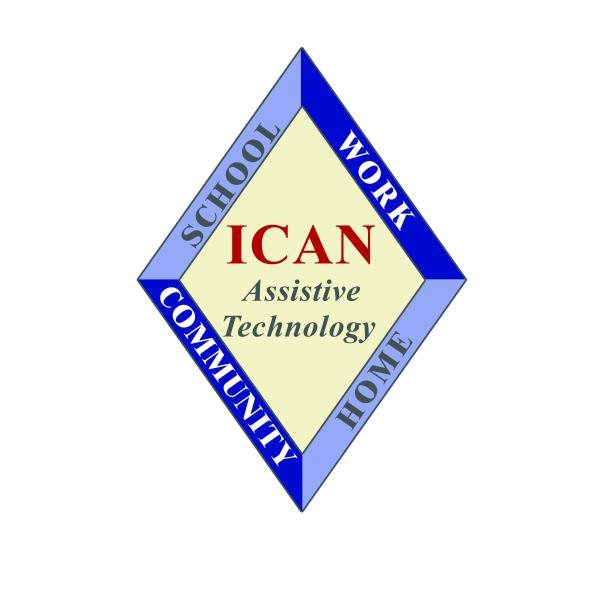
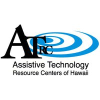
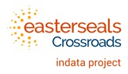
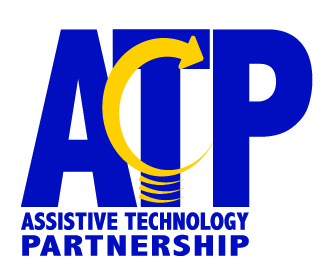
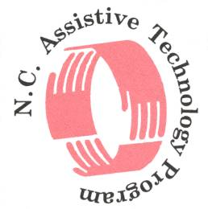
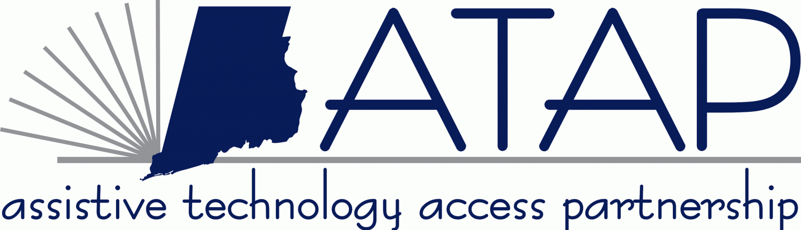
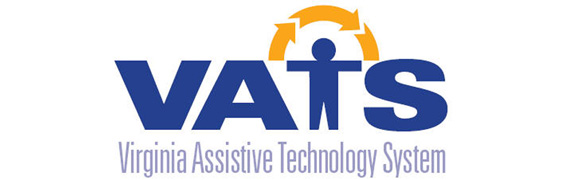
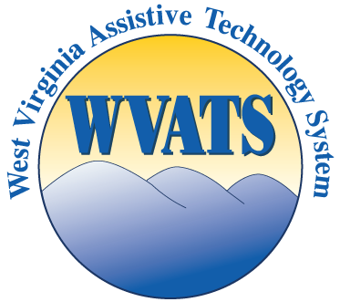

Skip map and jump to state information.
Click on a state in the map or select one from the dropdown list to see state information.
Lead Agency: Alabama Department of Rehabilitation Services (ADRS)
Program Title: STAR: Alabama's Assistive Technology Resource
Download the Alabama State Plan FY2015 here.
View the Annual Progress Report data for FY2017.
STAR supports an alternative financing program. The loan program is operated by the Southern Disability Foundation, Inc., a nonprofit organization, which provides a variety of low-interest and extended-term loans for the purchase of assistive technology devices and services. The Southern Disability Foundation partners with the Auburn Bank to provide guaranteed loans. Visit www.sdfalabama.com for more information about the alternative financing program.
STAR, in partnership with five (5) community-based organizations and one (1) faith-based organization administer medical equipment reutilization programs that increase options for Alabamians with disabilities to acquire medical equipment and other AT free of charge. Donations of used medical equipment and other assistive technology are refurbished, sanitized and loaned to individuals who have no other means of obtaining the needed equipment. The individuals can keep the equipment for as long as needed. Visit www.al.at4all.com for a complete inventory listing.
STAR, in partnership with a community-based program, supports an assistive technology short-term loan program. The STAR online “real time” database www.al.at4all.com is utilized to inventory AT devices, enter, track, and collect data for reporting. Consumers have a pool and/or choice of devices to “try out” up to 30 days to aid in the selection of a device that meets their specific needs. Consumers, family members, caregivers, professionals, etc. receive training on how to access assistance and the appropriate use of the device. Additionally, information is provided regarding available vendors, technical support, and financing for devices when requested, and as part of making an informed decision.
STAR, in partnership with a community-based program, supports an assistive technology demonstration program. The STAR online “real time” database www.al.at4all.com is utilized to inventory devices, enter, track, and collect data for reporting. Individuals are exposed to an array of AT devices and services that will enable them to make informed choices regarding assistive technology. The program also provides trial experiences with devices; and to the extent practicable, provide referral information regarding state and local assistive technology vendors, providers, repair services, and funding sources for the purchase of assistive technology. Demonstrations occur at various sites, including in homes, schools, worksites, etc. (as requested).
STAR, in collaboration with a subcontract program, conducts both online and face-to-face (onsite) training activities for assistive technology. Most training activities are conducted at the central site; however, as the need arises, training takes place at offsite locations, conferences, and online via live web-based distance learning. Several training modules have been developed and can be accessed online via www.startraining.org. The training activities are free, interactive and can be customized /tailored to meet the specific need of individuals, groups, or entities.
STAR provides direct and coordinated technical assistance to individuals, groups, agencies and organizations upon request. STAR’s technical assistance activities focus on specific problem-solving and coordination with AT vendors and other specialized AT resources to ensure the appropriate access to and acquisition of AT; the appropriate use and application of assistive technology devices and services; and AT-specific training to meet the particular needs of individuals with disabilities.
STAR conducts public awarness via a variety of venues and seeks every opportunity to increase the awareness of its programs and services such as exhibiting and presenting at major statewide conferences; advisory council meetings; utilizing the news media; subcontracts information and publicity tools; specific program brochures, social media, and other creative marketing and advertising mediums.
STAR utilizes a toll free number to provide information and referral services regarding assistive technology products, services, resources, suppliers/vendors, and funding. STAR employs a fulltime trained, knowledgeable Administrative Support Assistant who responds to inquiries. Resources and contact information is readily available to expedite the caller’s request. Information about STAR can also be obtained via the Alabama Department of Rehabilitation Services’ accessible website and www.al.at4all.com. Upon request, information is made available in alternate formats and specialized assistive technology is utilized when responding to individuals with sensory impairments.
Lead Agency: Alaska Department of Labor & Workforce Development, Division of Vocational Rehabilitation (DVR)
Implementing Entity: Assistive Technology of Alaska (ATLA)
Program Title: Alaska Statewide AT Program
Download the Alaska State Plan FY2015 here.
View the Annual Progress Report data for FY2017.
Alaska has a state alternative financing loan guarantee program that provides loans to individuals with disabilities and their families for the purchase of AT. The Statewide AT Program administers this guarantee loan fund with the assistance of Northrim Bank.
Assistive Technology of Alaska (ATLA), a nonprofit organization, maintains the AKTradingPost, a Web-based equipment exchange and reuse program. Items are available for sale, giveaway, loan and demonstration. Any Alaskan can post an ad, and a buyer can purchase used assistive technology at a negotiated price. Reutilization of durable medical equipment (DME) is done through the Independent Living Centers and small loan closets around the state.
ATLA maintains an online database of assistive technology devices and equipment that are available for short-term loan. Seven agencies across the state have listed items that are available. School districts currently maintain their own list of devices available for loan. Consumers are able to request loans from the website or go directly to the organization housing the items.
Alaska's statewide AT program established a network of device demonstration programs in conjunction with the device loan programs described above, and works with Independent Living Centers that provide device demonstrations. Demonstrations are also provided in locations around the state where demonstration centers are not available. In addition to the demonstration centers, 17 One-Stop Career Centers around the state have “demonstration” computer centers set up for consumers to come in, look for a job and try out some of the available devices.
Through ATLA, Alaska's statewide AT program provides training and technical assistance about AT around the state. ATLA offers AT trainings via presentations, webinars, conferences and seminars to those working in the areas of employment, human services, health services, education, IT and telecommunications, government and the private sector. ATLA coordinates the three-day Biennial Midnight Sun Assistive Technology Conference.
Alaska's Statewide AT Program has a leadership role in the newly developed Assistive Technology Consortium, a group of key policy decision makers in the state who are working together to leverage and coordinate resources, build assistive technology capacity and create systems, policy change and increase the awareness of assistive technology.
Lead Agency: American Samoa Government, Office of the Governor
Implementing Entity: American Samoa Office of Vocational Rehabilitation
Program Title: American Samoa Assistive Technology Training Services
Download the American Samoa State Plan FY2015 here.
View the Annual Progress Report data for FY2017.
American Samoa claims flexibility for this activity. As described in Section 4(e)(6) of the AT Act, a state may carry out any two or more of the required state-level activities, meaning a state can choose not to conduct up to two activities.
The AT program provides open-ended loans for devices for consumers who need devices while waiting for repairs on their own devices. Since some devices need to be sent away for repairs, the length of waiting for the repairs to be completed may be quite lengthy. The program also provides open-ended loans for computer devices for students who need these devices during the school semester.
American Samoa claims flexibility for this activity.
The AT program operates a device demonstration program by partnering with several entities including the American Samoa Community College, Department of Commerce and the Department of Human Resources, Workforce Investment Act (WIA) Division. Consumers come to the center and are able to try out devices to determine which devices work best for them.
American Samoa's AT program uses a multifaceted approach (mailings, Internet, exhibits, presentations and trainings) to increase awareness about the benefits, types and funding of AT devices and services. The AT program sponsors an annual conference, provides an information and referral service, distributes a newsletter, develops a website, and disseminates training materials and publications on AT for a variety of audiences.

Lead Agency: Northern Arizona University (NAU), Institute for Human Development (IHD)
Program Title: Arizona Technology Access Program (AzTAP)
Download the Arizona State Plan FY2015 here.
View the Annual Progress Report data for FY2017.
AzTAP directly operates two state financing activities in collaboration with community partners. Arizona Loan$ for Assistive Technology (AzLAT) is designed for individuals with disabilities (or for persons on their behalf) to borrow money at low interest rates to buy assistive technology for independent living, mobility, education, recreation, communication, etc. Its sister program, Arizona SEED Loan$, provides low interest loans for the purchase of equipment that supports telework, employment or self-employment opportunities.
AzTAP has three programs that give consumers direct access to reusable, less expensive AT equipment. The Arizona Assistive Technology Exchange (ATEX) is an online site where individuals can buy, sell, trade or donate AT via web- based “want ads.” AzTAP also coordinates the AT & Durable Medical Equipment (DME) Reuse Coalition, a site that provides a searchable listing of Arizona programs that run AT reuse activities including medical equipment loan closets. Finally, on a limited basis, AzTAP offers long-term, open-ended loans of older, but still highly usable, AT devices.
AzTAP’s short-term device loan program allows individuals throughout Arizona to borrow and use devices at home, school or at work so they can make an informed decision about whether the equipment will meet their real life needs. AzTAP also operates an AT loan program for the Arizona Department of Education, exclusively available to public and charter schools statewide. Lending library services are provided free of charge.
Device demonstrations are professionally guided, hands-on explorations of equipment that focus on device features and functions. Device demonstrations offer an in-depth, collaborative process to help individuals with disabilities (as well as family members, caregivers and service providers) make decisions about which assistive technology products will best meet their unique needs. AzTAP provides device demonstration services through in-house resources and through agreements with community partner organizations. Demonstrations are conducted at a variety of locations including the AzTAP central office, other AT resource centers as well as in the client’s home, work or school environments.
AzTAP provides public awareness and customized training in a variety of formats including webinars and statewide, face-to-face events. AzTAP sponsors a collaborative AT conference each year that brings together AT experts, service providers, consumers and AT product vendors. AzTAP disseminates free training materials and publications, provides a toll-free information and assistance service, offers updated in-depth resources on its website and publishes an E-newsletter several times per year. AzTAP uses its expertise in a variety of ways: staff members offer assistance by researching and answering AT related questions, identifying additional AT resources and referring clients to other agencies when appropriate. AzTAP also provides customized AT related technical assistance to government agencies, nonprofit organizations and businesses to improve their ability to address AT issues.

Lead Agency: Department of Career Education, Division of Arkansas Rehabilitation Services (ARS)
Program Title: Increasing Capabilities Access Network (ICAN)
Download the Arkansas State Plan FY2015 here.
View the Annual Progress Report data for FY2017.
An Alternative Financing Program (AFP) and telecommunications access program (TAP) will be accomplished through comparable nonfederal resources rather than through AT Act funding. Both activities are statewide, comprehensive programs administered by ARS.
ICAN will operate two device reutilization programs. The Device Recycling Program will refurbish a wide range of AT devices for donation to individuals with disabilities and agencies. Equipment that is ready for distribution will be listed on ICAN's Web site and shared with individuals and agencies. Equipment Exchange is a classified ad listing of used equipment available for sale, trade or donation by consumers throughout the state. ICAN will implement a statewide campaign to expand the awareness and benefits of AT reutilization as well as the many resources available through the state AT program.
ICAN's AT4All Loan Program will accept request for equipment loans from a person with a disability, family members, advocates or service providers. Borrowers are expected to make arrangements for pick up and drop off of the device whenever possible. Most device loans will be for a period of six weeks with the potential for extension.
ICAN will coordinate with agencies located throughout Arkansas to provide AT device demonstrations to consumers, families, students, professionals and interested others upon request and at conferences, workshops and other presentation opportunities.
ICAN will collaborate with the State Department of Education to cosponsor training to increase the knowledge, skills and competency of educators, therapists and others in the public school system. ICAN will respond to requests for technical assistance and provide a toll-free information and referral service on AT for people of all ages with all disabilities.

Lead Agency: California Department of Rehabilitation
Implementing Entity: California Foundation for Independent Living Centers (CFILC)
Program Title: Ability Tools
Download the California State Plan FY2015 here.
View the Annual Progress Report data for FY2017.
California's Alternative Financing Program (AFP) uses comparable nonfederal resources rather than AT Act funding. The state of California offers low-interest, guaranteed loans to finance AT or modified transportation through the Assistive Technology and Modified Transportation Loan Guarantee Program (LGP). LGP is implemented in collaboration with one or more lenders. This program is operated through the California Foundation for Independent Living Centers (CFILC). This program is currently suspended and not making loans (we will let you know when we are up and running with our federal program).
Ability Tools operates an AT Exchange website where individuals and organizations can post AT items for sale or donation. In addition, Ability Tools has partnered with reuse programs throughout the state that post their available inventory on the AT Exchange. The reuse programs accept assistive technology and medical devices, repair and sanitize them and offer them to individuals with disabilities free of charge or at a low cost.
Ability Tools currently supports 12 AT device loan sites throughout the state. Each Device Lending Library has a variety of AT devices for individuals with various types of disabilities. Devices are available to borrow for 30 days and can be renewed.
California claims flexibility for this activity.
Ability Tools provides a toll-free information and referral service through 800-390-2699 Voice/800-900-0706 TTY as well as online at www.abilitytools.org. Ability Tools also enhances AT awareness through participation in outreach events throughout the state, social media updates, presentations and working in collaboration with other nonprofits and referral agencies. Ability Tools materials are disseminated throughout the state to increase AT awareness. Ability Tools conducts webinar and in-person trainings throughout the year. The training announcements and the archived webinars are posted on the Ability Tools website.
Lead Agency: University of Colorado, Anschutz Medical Campus
Implementing Entity: Assistive Technology Partners
Program Title: Assistive Technology Program of Colorado
Download the Colorado State Plan FY2015 here.
View the Annual Progress Report data for FY2017.
Assistive Technology Program of Colorado claims flexibility for this activity. As described in Sec. 4(e)(6) of the AT Act, a state may carry out any two or more of the required state-level activities, meaning a state can choose not to conduct up to two activities.
The Colorado Program has developed the AT Finder, an online tool to search for assistive technology in Colorado. The AT Finder simultaneously searches eBay, Craigslist and other online classified ads to locate available items. AT Finder can be found on the AT Partners webpage. Assistivetechnologypartners.org
Assistive Technology Partners operates the Statewide Assistive Technology Augmentative and Alternative Communication Loan Bank (SWAAAC), a statewide loan bank of assistive technology that is available to all school districts and to participating early intervention service providers. Devices can be borrowed by schools and providers for their students.
Device demonstration opportunities are available to consumers, family members, service providers and the general public to learn about assistive technology and allow participants to explore the use of devices. An individual can contact Assistive Technology Partners to schedule a time to see assistive technology that might meet their specific needs. Device demonstrations can be provided in the Denver center or at one of the regional sites in Grand Junction or Colorado Springs. The AT Network also provides demonstrations of technology regionally through organizations that serve people with disabilities throughout Colorado.
The Colorado Assistive Technology Coalition meets six times a year to discuss issues specific to assistive technology. Members represent state agencies and organizations that serve people with disabilities or older people and consumers who benefit from the use of technology. The Coalition also serves as the Advisory Council for the Assistive Technology Program of Colorado.
Lead Agency: Connecticut Bureau of Rehabilitation Services
Program Title: Connecticut Tech Act Project
Download the Connecticut State Plan FY2015 here.
View the Annual Progress Report data for FY2017.
The Connecticut Assistive Technology Loan Program offers loans for individuals with disabilities and their family members to purchase assistive technology devices and services. For more information about the AT Loan Program, visit www.CTtechact.com/loan.
The Connecticut Tech Act Project partners with the New England Assistive Technology Center (NEAT), which offers an Equipment Recycling Center where people can find used and refurbished durable medical equipment at a discounted price. The Connecticut Tech Act Project also offers online classifieds for assistive technology at www.getATstuff.com, where new and used assistive technology devices are posted online for sale or for free.
The Connecticut Tech Act Project offers several device loan programs. We offer a lending library of a variety of AT devices to educators and other professionals throughout the state. We have a Computer Loan Program to college students and high schools throughout Connecticut. The computers are loaned with a variety of adaptive software pre-installed to give the borrower an opportunity to try out the software before obtaining it. IPads with a variety of apps are now also a part of this lending program. The CT Tech Act Project also offers a device loan program specifically for consumers of the Vocational Rehabilitation program to allow them to borrow equipment to be used at the work site. This gives the consumer, the employer and the VR counselor an opportunity to determine if the device is the right one for the consumer, before purchasing it. For more information on the type of devices that are available for loan and eligibility criteria, contact the program at 860-424-4881.
The Connecticut Tech Act Project has Device Demonstration Centers located throughout the state where one can go to view a variety of AT devices, learn about the various features and make an informed decision about the assistive technology device(s).
The Connecticut Tech Act Project offers training and technical assistance, information and referrals and other activities to increase awareness of assistive technology, increase access and help individuals with disabilities obtain assistive technology devices and services. To learn more about any of the Connecticut Tech Act Project programs and services, please visit our website at www.CTtechact.com or call us at 860-424-4881.

Lead Agency: University of Delaware
Program Title: Delaware Assistive Technology Initiative (DATI)
Download the Delaware State Plan FY2015 here.
View the Annual Progress Report data for FY2017.
DATI conducts three state financing activities. The Borrow-to-Own Low-vision Devices (BOLD) Program and the W. E. Tobin Fund for Visual Assistive Technology at the University of Delaware (Tobin) are financing activities that make AT available at no cost to qualifying individuals with vision loss. iCanConnect Delaware is a program that distributes an array of assistive technology to people who are deaf-blind, low income, and require special equipment to make a phone call, send an email, or access the Internet.
DATI administers an AT Exchange Program (ATEx) that enables individuals to buy, sell or give away used AT through Web-based "want ads." The AT Exchange features a feedback capability that allows program staff to follow up with users of the system.
DATI operates a device loan program through its network of three AT Resource Centers (ATRCs). The statewide inventory includes over 1,900 augmentative communication devices, aids for daily living, sensory aids, and other equipment. Persons with disabilities and service providers who want to learn how to use the AT or wish to try it out can go online and explore devices—organized into 10 categories—with the option of contacting the ATRC closest to their location to discuss arrangements for borrowing a device.
DATI's demonstration program operates in conjunction with its existing three ATRC loan programs. All equipment in the inventory is available for demonstration, and resident AT specialists are skilled at assisting consumers, family members and those affiliated with disability-related organizations to become more informed as to the devices that might work for them.
DATI develops and implements numerous training opportunities, ranging from two-hour sessions to training series that span several days. Training can be customized according to topic and audience. DATI increases awareness of AT through a newsletter, a toll-free information and referral service, the website, community events, statewide conferences, and training materials and publications on AT that are also available in Spanish.

Lead Agency: District of Columbia Department on Disability Services Rehabilitation Services Administration
Implementing Entity: University Legal Services
Program Title: Assistive Technology Program for the District of Columbia (ATPDC)
Download the District of Columbia State Plan FY2015 here.
View the Annual Progress Report data for FY2017.
The Assistive Technology Financing Loan Program is a low-interest funding source for District of Columbia residents with disabilities and older adults to purchase assistive technology devices and services. Many different items are considered assistive technology, including hearing aids, communication devices, computers and specialized software, home modifications and more. Persons with disabilities and their family members, guardians or advocates living in the District of Columbia can apply to purchase assistive technology devices and services that will allow them to live independently at home, school, work or in the community. Individual loan amounts can range between $500 to 10,000 with a low 4% interest rate.
ATPDC manages the District of Columbia Disability Equipment Recycling Program (DC Shares). DC Shares recycles new and used assistive technology devices and durable medical equipment (DME), such as wheelchairs, walkers and bathroom equipment, and other similar devices to District of Columbia residents who are in need. The equipment is available at no cost, for District of Columbia residents with disabilities or those who have a dependent with a disability, regardless of their type of disability or age.
ATPDC operates an AT device loan program, which assists individuals with disabilities and professionals in decision making before the purchase of the equipment, accommodates interim needs for device repair or funding and other purposes, such as self-evaluation and training by clinicians to use a device to assess clients. The AT device loan program allows the end user to make informed choices to purchase the appropriate assistive technology devices to live independently.
ATPDC operates the District of Columbia Assistive Technology Resource Center (DCATRC). The DCATRC is an AT demonstration center where individuals with disabilities and service providers may explore, experience and compare the usefulness of various types of AT equipment, learn about possible product vendors and other related services, and discuss their applications for devices or services.
ATPDC increases knowledge about the availability, benefits, the appropriateness and cost of assistive technology devices and services through community outreach through such events as employment and education fairs and exhibits. ATPDC also conducts customized training for schools, employers, local government and community-based organizations in the District of Columbia to help them make effective use of assistive technology devices and services.
Lead Agency: Florida Department of Education, Division of Vocational Rehabilitation
Implementing Entity: Florida Alliance for Assistive Services and Technology, Inc. (FAAST)
Program Title: Assistive Technology Services
Download the Florida State Plan FY2015 here.
View the Annual Progress Report data for FY2017.
FAAST administers two loan guarantee programs: an Alternative Financing Program for the purchase of AT and an Access to Telework Loan Program for the purchase of equipment needed to set up a small business or to work from home for an employer.
FAAST administers multiple reutilization and refurbishing programs through subcontractors statewide. FAAST also hosts a Web-based device exchange program through "AT Bay" where individuals can buy, sell or trade assistive technology.
FAAST administers a statewide Web-based assistive technology device loan program that enables individuals to review a large inventory of assistive technology and make a request to borrow assistive technology. Assistive technology device loans are shipped to and from at no cost to the borrower. The six FAAST Regional Demonstration Centers (RDC) have regional device loan programs as well.
FAAST maintains six Regional Demonstration Centers in Tallahassee, Pensacola, Jacksonville, Orlando, Tampa and Miami where assistive technology device demonstrations are conducted on a daily basis for individuals with disabilities and others who visit the RDCs.
FAAST's public policy initiatives that promote access to and acquisition of assistive services and technology focus on serving on state councils and boards, working with state agency officials, and producing public policy issue briefs to educate the three branches of state government on legislative and public policy matters affecting the acquisition of assistive technology for individuals with disabilities and their families. FAAST public awareness activities include the research, development and distribution of self-help up-to-date resource guides, public service announcements, a FAAST Access Magazine and a myriad of other brochures and publications, resource information and a user-friendly website, as well as exhibits and public forums statewide.
Lead Agency: Georgia Department of Labor (GDOL)
Program Title: Tools For Life (TFL)
Download the Georgia State Plan FY2015 here.
View the Annual Progress Report data for FY2017.
Tools for Life supports Credit-Able, Georgia's Alternative Financing Program (AFP), providing guaranteed loans to individuals with disabilities and their families for the purchase of AT devices and services. TFL works with organizations, such as the Center for Financial Independence & Innovation's Credit-Able Program, the GettingAhead Association and the Assistive Technology Resource Centers (ATRCs) to expand CreditAble. TFL supports the administration of a small last resort fund and has created an AT co-op called AT Depot.
TFL supports several device reuse activities including: ReBoot - a computer reutilization program; Friends of Disabled Adults and Children, Too - a durable medical equipment (DME) reuse program; and G-Trade - an online AT equipment exchange program. Every region of Georgia is served by TFL reuse efforts. TFL also created the Southeastern Technology Access & Reuse (STAR) Network with many community partners throughout the southern states to increase capacity and serve more individuals through AT reuse.
The TFL Network has an extensive AT Device Loan Library and contracts with Disability Connections, Tech-Able, Touch the Future and Walton Options, organizations that handle the day-to-day operations of this service. The equipment in the AT Device Loan Library program is shipped to any location in Georgia. The length of a device loan is two to four weeks with the possibility of extension.
TFL conducts device demonstrations and contracts with a network of ATRCs to conduct device demonstrations across the state. Each center is stocked with a core set of innovative AT solutions for demonstration. TFL ensures the needs of individuals are met by annually evaluating the comprehensiveness of the AT device demonstration programs with regard to type of equipment and audiences reached.
Training has been and continues to be developed to include information about AT solutions, AT resources, AT funding strategies and TFL programs. TFL has increased awareness about the benefits of AT through bimonthly webinars, biannual statewide conferences, a toll-free information and assistance service, an in-depth website featuring a funding guide, quarterly newsletters, training materials and publications provided free of charge.
.png)
Program Title: Guam System for Assistive Technology (GSAT)
Download the Guam State Plan FY2015 here.
View the Annual Progress Report data for FY2017.
GSAT operates two financial loan programs: the Guam Options for Alternative Loans-Assistive Technology (GOAL-AT), which offers low-interest loans for the purchase of assistive technology and the Get Guam Teleworking Loan Program (GGT), which offers low-interest loans to help individuals with disabilities with self-employment.
GSAT administers a reutilization program, which includes recycling, refurbishment, repairing, device reassignment and device exchange that increases options for acquiring AT by individuals with disabilities.
GSAT's device loan program offers access to AT equipment available at the Center for a free, one-month trial use. The program assists consumers to make an informed choice by providing the opportunity to try and practice a device in an appropriate setting.
GSAT provides opportunities for people to learn about potential devices and categories of assistive technology (AT) that assists with making an informed choice about AT that might be of benefit to them through device demonstrations. Information is provided to individuals to gain more knowledge about appropriate next steps or to secure needed equipment. Device demonstrations are available upon request at the GSAT Center.
GSAT conducts regular training and technical assistance on the general awareness, skills-development, selection, use, and acquisition of AT devices and services, as well as on transition assistance to individuals with disabilities. GSAT offers free information and referral services, disseminates training materials and publications that cover AT.

Lead Agency: Hawaii Department of Human Services, Vocational Rehabilitation
Implementing Entity: Assistive Technology Resource Centers of Hawaii (ATRC)
Program Title: Assistive Technology Resource Centers of Hawaii (ATRC)
Download the Hawaii State Plan FY2015 here.
View the Annual Progress Report data for FY2017.
ATRC, working with American Savings Bank (ASB) of Hawaii, supports the ATRC Assistive Technology Loan Program to offer Hawaii residents low-interest loans, at affordable terms, to acquire AT devices and services that enhance independence in the home, workplace and community. ATRC Loan Program funds are used to guarantee the money borrowed through ASB.
ATRC has created a Computer Redistribution Program and an AT Equipment Relocation Program to carry out device reutilization activities. The computer systems redistribution is stocked by donated computers from Hawaii businesses and other sources and made ready for free distribution to persons with disabilities. The Equipment Relocation Program brings together buyers and sellers of AT in Hawaii and is administered at both the physical location of ATRC offices and through an online portal designed to provide statewide accessibility.
ATRC has developed an "AT Depot" device loan program that provides a short-term loan of AT devices and educational materials, such as AT videos and publications. These short-term loans allow for the use of a trial device for assessment and evaluation and a temporary device for use while a primary device is repaired or maintained. The AT Depot is administered through four physical locations at the ATRC office and at partner agency locations on the islands of Maui, Kauai and Hawaii.
ATRC provides device demonstration centers throughout the state, at the main ATRC office and on the neighbor islands of Maui, Kauai and Hawaii. The primary goal of the demonstration centers is to provide an opportunity for consumers to learn about AT devices and try them out.
ATRC provides training activities through conferences, such as the Tools for Life Hawaii Expo, scheduled workshops and open training sessions. Technical assistance continues to be provided in coordination with the Pacific ADA and IT Center. ATRC provides a toll-free information and referral service; the Reacher, a monthly newsletter; the Kupuna Guide-AT daily living geared for the kupuna or senior populations in Hawaii, a website, including a one-stop database of links to resources and current social media networks.
Lead Agency: University of Iowa, Center for Disabilities and Development (CDD)
Program Title: Easter Seals Iowa Assistive Technology Program (ESI ATP)
Download the Iowa State Plan FY2015 here.
View the Annual Progress Report data for FY2017.
Easter Seals Iowa Assistive Technology Program contracts with Iowa Able Foundation to manage Iowa's Alternative Financing Program (AFP). The AFP program provides loans to individuals with disabilities and their families for the purchase of AT devices and services, including home and vehicle modifications. These are direct and guaranteed loans with flexible terms to help individuals increase their independence at home, at work and in the community.
Easter Seals Iowa Assistive Technology Program operates a statewide Demonstration Center located in Des Moines. The center focuses on devices for community living, activities of daily living, recreation and Autism. Easter Seals Iowa Assistive Technology Program also provides AT devices and software to the Iowa Division of Vocational Rehabilitation for device demonstration to its clients and employers in the state.
Easter Seals Iowa Assistive Technology Program engages in a number of activities to improve access to AT devices and services. Technical assistance and training is provided to agencies and organizations relating to education, employment, community living and emergency preparedness.

Lead Agency: University of Idaho, Center on Disabilities and Human Development
Program Title: Idaho Assistive Technology Project (IATP)
Download the Idaho State Plan FY2015 here.
View the Annual Progress Report data for FY2017.
IATP operates the Idaho Assistive Technology Loan Fund, which offers loan guarantees to provide financial loans for the purchase of AT. IATP administers the fund while sharing responsibilities with three other entities: Zions First National Bank, Key Bank of Idaho and Idaho Community Foundation.
IATP has a fully accessible Web-based equipment exchange program to increase the availability of used AT devices for persons with disabilities. An individual no longer in need of an AT device who wants to sell or give the device away can contact IATP through the website or existing toll-free telephone line and request to post an advertisement. There are a number of agencies, individuals, and centers who use the site. They include senior centers, office on aging regional offices, independent living centers, the Commission for the Blind, the State Department of Education, Idaho Department of Vocational Rehabilitation, and the assistance centers for the Idaho Council for the Deaf and Hard of Hearing.
The IATP supports device loaning through resource and assistance centers throughout Idaho. There are four regional AT resource centers from where device loaning process emanates. These resource centers are charged with supporting all stakeholders who need AT including a developmental toy loan program, which ships items statewide at no cost. In addition, the IATP partners with the Idaho Council for the Deaf and Hard of Hearing to support seven regionally based assistance centers which focus on lending hearing assistance equipment.
IATP operates an AT demonstration program by assisting and supporting four regional AT resource centers, seven hearing assistance centers, and a network of Assistive Technology Professionals (ATPs) who lend their expertise to guide individuals through a comparison of devices.
IATP includes a staff of both fulltime and part-time individuals all of whom collaborate with four regional AT resource and seven hearing assistance centers as well as a network of ATPs. The IATP provides daily technical assistance, in addition to facilitating and conducting trainings on AT-related topics to a variety of stakeholders, including Universities in an effort to follow a training model which is not always in a position of "catching-up" on AT related topics through professional development. IATP fosters the previously mentioned activities and AT-related information and assistance to people of all ages and disabilities through the websites, social media, training materials, publications, online trainings and a twice yearly newsletter. In addition, IATP sponsors the annual Tools for Life conference held in collaboration with the Idaho Department of Education and the secondary transition task force. The IATP is also working collaboratively with the Department of Education to implement Accessible Instructional Materials (AIM) into the PreK12 environment. It is important to note, AIM as well as all other training and supports are being designed through the foundational Principles of Universal Design for Learning.
Lead Agency: Illinois Department of Human Service (DHS), Division of Rehabilitation Services (DRS)
Implementing Entity: Illinois Assistive Technology Program (IATP)
Program Title: Illinois Assistive Technology Program (IATP)
Download the Illinois State Plan FY2015 here.
View the Annual Progress Report data for FY2017.
IATP implements a statewide Alternative Financing Program (AFP) and Access to Telework Loan Program. Both program components offer a preferred interest rate, extended repayment plans, and/or relaxed credit standards.
IATP's reutilization program, AT Classifieds, is designed as an accessible online AT exchange that assists consumers of AT to buy, sell or donate pieces of used AT equipment.
There are currently over 2,000 devices in IATP's inventory available for loan up to five weeks. The devices are assembled and shipped out to the borrower anywhere in the state. The expense to ship AT to a borrower is covered by the program. Return shipping expenses are the responsibility of the borrower.
IATP operates an AT Device Demonstration Center in Springfield, Il, which contains an accessible kitchen, bathroom and other "rooms" featuring workplace technologies, sensory aids, adapted toys and switches, aids for daily living, and augmentative communication devices. IATP transports AT devices to another location if a consumer cannot get to Springfield.
IATP conducts AT training statewide and works with agencies to customize workshops to meet AT needs in such areas as older adults, early intervention, education, employment, and activities of daily living. IATP uses a multifaceted approach (mailings, Internet, exhibits, presentations, and trainings) to increase awareness about assistive technology devices and services. IATP provides information and assistance statewide through its toll-free numbers and produces a quarterly newsletter, TechTalk, which has a distribution of over 8,200 individuals. IATP continues to coordinate and collaborate with public and private agencies on activities that improve access to and funding for assistive technology devices and services statewide.

Lead Agency: Indiana Division of Disability, Aging, and Rehabilitative Services
Implementing Entity: Easter Seals Crossroads
Program Title: Indiana Assistive Technology Act (INDATA) Project
Download the Indiana State Plan FY2015 here.
View the Annual Progress Report data for FY2017.
The INDATA Project operates a financial loan program, which offers loan guarantees to provide loans for the purchase of assistive technology. An advisory council specific to the loan program has been established and provides guidance. This advisory council reports back to the INDATA statewide AT advisory council and the Easter Seals Crossroads board of directors.
The INDATA Project provides a computer reutilization program and assistive technology reutilization program throughout the state of Indiana. This program, known as the INDATA Depot, operates via our physical location as well as an online database. Users of this system list ads in the form of "buy, sell, or trade" transactions. Potential users then respond to those ads and work with the current owner to coordinate the sale or exchange of items. The Depot also provides reutilization of computers and other high-tech assistive technology devices at no charge to qualified program participants.
The INDATA Project owns and utilizes a collection of over 2,000 assistive technology items for 30-day loans to assist borrowers in making informed decisions about the kinds of assistive technology ultimately used at home, school or on the job.
The INDATA Project provides to your door and on-demand device demonstrations.
The INDATA Project provides a diverse offering of education and outreach as well as collaboration and coordination services. Highlights include full-day assistive technology training activities that are broadcast throughout the state via webcasting, a social networking outreach campaign that includes weekly YouTube videos, two weekly podcasts, blogging, Facebook and Twitter outreach. Additionally, the project has taken a leadership role with a number of university-based AT programs and AT entrepreneurship activities.
Lead Agency: Kansas University Center of Developmental Disabilities
Program Title: Assistive Technology for Kansans (ATK)
Download the Kansas State Plan FY2015 here.
View the Annual Progress Report data for FY2017.
ATK conducts four state financing activities. It works with the Kansas Assistive Technology Cooperative (KATCO) to operate an alternative financing program to assist persons in acquiring AT and to operate the Kansas Telework Loan Program to support persons working from remote locations. KATCO works with Kansas financial institutions to offer a reduced interest, extended payback period, financial loan program.ATK provides case management by AT funding specialists to assist consumers in acquiring AT, and it determines eligibility and equipment justification services for its Telecommunications Access Program (TAP).
ATK offers two reutilization activities. One activity is the Kansas Equipment Exchange (KEE) Program, which operates in conjunction with Kansas Health Care Policy (Medicaid) and Kansas University to track equipment purchases, affix an electronic tracking code on new equipment and maintain a real-time database of KEE inventory. Equipment no longer needed by the Medicaid beneficiaries is returned to the program so that it can be refurbished and reused by a new consumer. A second activity is the ATK equipment reutilization program for expensive technology that does not meet the definition of durable medical equipment (DME) required by the KEE Program. This small reutilization program for expensive equipment, therefore, focuses on devices that are not medical in nature and, therefore, would not be purchased or tracked by Medicaid.
ATK operates a short-term AT equipment loan program known as the Statewide Interagency Equipment Loan System. The length of the device loan is four weeks; a rental fee and shipping costs are assessed for each item based on a sliding scale.
ATK staff provides demonstrations to individuals and small groups at regional AT Access Sites and at off-site locations, such as schools, homes and work sites. ATK plans to expand the demonstration equipment inventory at the regional AT Access Sites and at the Statewide Interagency Equipment Loan System.
The toll-free KAN DO-IT line offers a free information and referral service on AT. The website provides resources and an opportunity to directly contact ATK programs. Training materials and publications on a broad array of AT related issues are available free of charge in any requested alternative format.
Lead Agency:Kentucky Office of Vocational Rehabilitation
Program Title: Kentucky Assistive Technology Service (KATS) Network
Download the Kentucky State Plan FY2015 here.
View the Annual Progress Report data for FY2017.
The KY Title III Alternative Financing Program (AFP) and the Telecommunications Access Program (TAP) are operated with other comparable non-AT Act funding, under the Office of Vocational Rehabilitation and the Commission on the Deaf and Hard of Hearing, respectively.
Their URLs are: http://www.katlc.ky.gov and http://www.kcdhh.ky.gov/oea/tddprog.html, respectively.
The Assistive Technology Exchange List (ATEX) is a Web-based "classified" listing of AT devices offered for sale or donated by and for consumers. It also contains a list of AT that consumers need. It is maintained online at http://www.katsnet.org/services/reutilization/atex. Additionally, the four Regional AT Resource Centers (ATRCs) of KATS operate AT reassignment programs for consumers. The amount of equipment available at one time is limited by donations and storage space. Most equipment is reassigned on an as-is basis.
Device Loans of AT are provided through the regional ATRCs and through a Transition AT Demo/Loan lab at KATS. The ATRCs each conduct device loan programs enabling consumers to borrow AT devices for 30-day trial periods. Extended loans may be provided depending on the availability of equipment. The focus of the KATS Transition AT Demo/Loan Lab is to provide specialized demo and device loan activities for transition from secondary to postsecondary education or work, transition from institutional care to community-based care, and/or including deaf/blind.
KATS delivers device demonstration programs primarily through the regional ATRCs, along with the KATS Transition AT Demo/Loan Lab. Each ATRC has an array of AT devices for demonstration, including individual and group activities designed to explore a range of available AT devices, individual consultations to support appropriate device selection, and individual or group training to support appropriate usage of devices. The focus of the KATS Transition AT Demo Lab is the same as for the KATS Transition AT Loan Lab described above under Device Loans.
KATS provides training and technical assistance to individual consumers, professionals, groups and organizations. Activities include collaboration with other organizations. KATS continues to provide publications on AT, an in-depth website, e-mail lists and listserv distributions, and a toll-free information and referral service.
Lead Agency: Louisiana Department of Health and Hospitals (DHH)
Implementing Entity: Louisiana Assistive Technology Access Network (LATAN)
Program Title: Louisiana Assistive Technology Access Network (LATAN)
Download the Louisiana State Plan FY2015 here.
View the Annual Progress Report data for FY2017.
LATAN operates a reduced-interest, fixed-rate, extended term alternative financing program. Loan applications are available online, by a statewide toll-free number, in LATAN's office, and at various agencies across the state of Louisiana.
LATAN operates an online classified database of previously owned, affordable AT devices, the AT Marketplace: Louisiana's Assistive Technology Classifieds, which makes available used devices for low or no cost.
LATAN's device loan program is available throughout the state through its two offices and via shipping. In addition, LATAN provides information about other loan closets in the state. Device loans are typically made for communication, computer access, software and vision devices.
LATAN has two device demonstration centers - one in the south central area of the state and one in the northwest area of the state. Through partnerships, LATAN has 4 satellite centers serving those seeking AT for the purpose of employment. In addition, for a travel fee, LATAN provides "traveling demonstrations" to rural and remote areas of the state. Over 700 devices are available for demonstrations.
Training is provided to AT users on specific devices, especially those wanting to return to the workforce, and to increase the skill level of AT providers, including those who work in rehabilitation services. Technical assistance includes assisting with the development of AT services in waiver programs for long-term supports and services, in developing emergency preparedness and response policies and procedures, in transitioning from one setting to another, and in affordable and accessible housing policy. LATAN participates in public awareness presentations and exhibits, and is promoted through the use of various forms of media, including social media such as facebook, and through the use of brochures and other printed material. Consumers can benefit from LATAN's toll-free information and assistance service; a monthly e-newsletter; e-blast publications about AT; and a website. LATAN collaborates with other entities to increase access to assistive technology.
Lead Agency: Maine Department of Education
Program Title: Maine CITE Program (Maine Consumer Information and Technology Training Exchange)
Download the Maine State Plan FY2015 here.
View the Annual Progress Report data for FY2017.
Since 1989, Maine's long standing mPower Loan Program has used state funds to enable people with disabilities to qualify for affordable cash loans to purchase the AT, adaptive equipment and to make home modifications. Over the years, thousands of Maine consumers have borrowed and paid back millions of dollars from the fund.
Maine CITE supports an AT reuse program through Spurwink-ALLTECH that makes used AT available at discount prices. Maine also has an informal network of device exchange programs that offer AT devices for sale or at no cost.
Maine CITE supports AT service providers offering AT device loan programs through the University of Maine at Farmington, Spurwink-ALLTECH, Pine Tree Society and C.A.R.E.S., Inc. These device loan programs enable individuals with disabilities (children/families, adults and seniors) and professionals to borrow AT for up to three weeks, with potential renewals. Through AT4Maine.org, hundreds of AT devices can be viewed and accessed for “try before you by” loans to assist in sound decision making about AT purchases.
Maine CITE supports Spurwink-ALLTECH, the University of Maine at Farmington, Pine Tree Society and C.A.R.E.S to offer AT device demonstrations. The AT4Maine.org website serves as a central point of information about those AT services and the statewide device inventory.
Maine CITE plans and implements training and public awareness events with more than 15 AT provider organizations that make up the State AT Consortia. Numerous webinars are provided each year and are archived on www.mainecite.org. Technical assistance related to AT, accessible education/instructional materials, accessible IT and transition is provided. The Maine CITE Program hosts a robust informative website as well social media to provide information and awareness services.
Lead Agency: Maryland Department of Disabilities
Program Title: Maryland Technology Assistance Program (MD TAP)
Download the Maryland State Plan FY2015 here.
View the Annual Progress Report data for FY2017.
Maryland operates two financial loan programs that help consumers afford AT. These financial loan programs provide low-interest loans through the AT Loan Program and WorkABILITY Loan Program. Additionally, MDTAP helps support an Assistive Technology Cooperative Buying program that provides discounts on AT products for individuals, families and education entities.
Maryland supports durable medical equipment recycling programs that provide equipment to individuals with disabilities who have low incomes and are uninsured or underinsured. Maryland maintains an online equipment exchange website to serve as an online classified ads for those who want to buy, sell, donate, or borrow AT.
MD TAP runs an Equipment Demonstration & Loaner Library, lending equipment to schools and individuals across the state. Items for loan include augmentative communication devices, blindness and low-vision products, computer access devices, electronic note takers, adapted telephones and telecommunications devices for the deaf, assistive listening, alerting systems, aids for daily living and much more.
Two AT demonstration sites are located within the state to allow for individuals with disabilities to receive information and try out a variety of AT. Additional demonstrations are provided off-site when individuals are unable to travel to a demonstration center and for group presentations.
MD TAP provides workshops on a variety of topics relevant to AT and implements a multifaceted public awareness approach. MDTAP also provides technical assistance for implementation of the state's information technology non-visual access policy, provides resources on state agency website evaluations for accessibility.
Lead Agency: Massachusetts Rehabilitation Commission, Community Living Division
Program Title: MassMATCH (Massachusetts Maximizing Assistive Technology in Consumer's Hands)
Download the Massachusetts State Plan FY2015 here.
View the Annual Progress Report data for FY2017.
Massachusetts supports an Alternative Financing Program known as the Massachusetts Assistive Technology Loan Program (MATLP). The program provides low-interest loans and loan guarantees for people purchasing assistive technology. Massachusetts partners with Easter Seals of Massachusetts and Sovereign Bank to provide these loans.
Together with the other New England states, Massachusetts maintains the AT Exchange in New England website, which provides an online catalog of used AT available for sale or donation. Announcements about needed AT can also be posted. The AT Exchange can be accessed by going to http://www.getATstuff.org Massachusetts also has a device exchange program specially designed for schools and other educational institutions known as the Assistive Technology School Share (ATSS). ATSS is a FREE private members-only online equipment reuse program designed to make it easier for participating schools across the state to get assistive technology for their students with disabilities. ATSS can be accessed by going to www.atschoolshare.org Massachusetts has also developed a long-term device loan program, operated by the AFP partner, Easter Seals of Massachusetts. The program allows individuals to borrow AT devices valued under $500 for as long as the devices are needed.
Massachusetts operates a device loan program. MassMATCH funds two Assistive Technology Regional Centers (ATRCs) which provide device demonstration and loan services. One of the regional centers is located in Boston and operated by Easter Seals of Massachusetts. It serves residents of Eastern Massachusetts. The other regional center is located in Pittsfield and operated by UCP of Berkshire County. It serves residents of Western Massachusetts. Through an online inventory on the MassMATCH website, consumers can view available devices and request device loans from either of the two AT regional centers.
Device demonstrations are conducted at either of the two AT regional centers. One of the regional centers is operated by Easter Seals of Massachusetts and is located in Boston. The other regional center is operated by UCP of Berkshire County and is located in Pittsfield.
Each year MassMATCH hosts regional AT Expositions to increase public awareness. The program operates a listserv for sending out timely information on AT-related topics as well as a quarterly newsletter. MassMATCH also has a website - www.massmatch.org with a lot of information and resources about Assistive Technology. The website also has a Blog Page and an "Ask An Expert" feature.
Lead Agency: Department of Human Resources-Michigan Rehabilitation Services
Program Title: Michigan Assistive Technology Program (MATP)
Download the Michigan State Plan FY2015 here.
View the Annual Progress Report data for FY2017.
Michigan's AT Loan Fund provides low-interest loans to people with disabilities so they can purchase AT. This program is administered by UCP Michigan and supported by the AT Program. The Michigan Employment Loan Fund, also operated by UCP Michigan and partially supported by the AT Program: http://www.michiganloanfunds.org/atlf/.
The Michigan AT Program provides the AT Xchange (ATX) for individuals with an AT device wishing to either sell or give it away. The ATX is a website ad service that connects buyers and sellers of devices, and is located at: http://www.atxchange.org.
The Michigan AT Program provides an opportunity for people to borrow a device on a short-term loan following a device demonstration for purpose of deciding if the device will help them or not.
Michigan works with other organizations around the state to provide demonstrations of devices. Devices are organized into kits which include AT devices for community living called "small changes, Big Differences," AT for Safety and Emergencies, Low Vision and Hard of Hearing kits and kits of devices people who are neurodiverse. People can learn about demonstrations and locations program's web site.
Michigan's program maintains a website that includes an AT Directory and a blog. The program has extensive partnerships for coordination and collaboration on statewide issues. In partnership with the Disability Network Michigan, Michigan also provides local information and assistance. The program also presents at conferences, provides webinars and materials for publications and training about AT.
Lead Agency: Minnesota Department of Administration
Program Title: Minnesota STAR Program
Download the Minnesota State Plan FY2015 here.
View the Annual Progress Report data for FY2017.
EquipALife, a community-based organization, contracts with the Minnesota Department of Administration, through the STAR Program as the lead agency, to provide alternative financing and telework financial loan programs. EquipALife provides financial solutions for Minnesotans of all ages. Services include a low interest loan for individual to purchase equipment that may not be provided through another program. Access to Telework is a low interest loan program for people with disabilities who are self-employed, work from home or telecommute to purchase equipment.
STAR maintains a free online device exchange website that allows people to sell, donate and buy used assistive technology. In addition, STAR contracts with established agencies and organizations to repair or refurbish wheelchairs, computers, and aids for daily living for long-term loan or resale to individuals with disabilities.
Through a contractual agreement, established device loan programs statewide provide an array of assistive technology devices to persons with disabilities of all ages. Through the loan programs, individuals may trial a device prior to purchase, while their device is being repaired, or to meet a short term accommodation. AT devices available for short term (30 days) loans include aids for daily living, communication, hearing, vision, mobility, or recreation and leisure. Equipment may be used for educational purposes, for employment, or in the home or community.
STAR maintains a device demonstration lab where employees of the State of Minnesota may test various computer keyboards, mice, and software in order to pursue a reasonable work accommodation. In collaboration with established statewide device demonstration programs, AT devices are demonstrated to consumers, educators, employers, parents, and/or medical professionals in order to make an informed choice about which AT device to pursue for purchase or loan. Demonstrations of AT are provided in a location most convenient for the consumer.
STAR provides information and referral assistance to consumers, parents, professionals and the general public. A newsletter is published three times a year. Individuals are encouraged to use the STAR listserv to share information about AT. The website is a source of information about STAR services, AT resources in the state and the STAR Advisory Council. Biannually a Directory of Funding and Assistive Technology Resources in Minnesota is published. STAR participates in various community and governmental committees to share and receive information about AT services. AT training and technical assistance is provided for state employees, AT professionals, employers and consumers. STAR cosponsors and collaborates in transition events for both students and adults. STAR displays various AT devices at conferences, public information fairs, workshops, public libraries, senior centers and other locations throughout the state.

Lead Agency: Missouri Assistive Technology Council
Program Title: Missouri Assistive Technology (MoAT)
Download the Missouri State Plan FY2015 here.
View the Annual Progress Report data for FY2017.
MoAT implements three state financing activities. The Show-Me Loans program provides low-interest loans for vehicle access modifications, home access improvements, mobility equipment, sensory aids and other AT. Another program, "WorkAbility Loans" provides low-interest loans for Missourians with disabilities for equipment needed to telework. MoAT also implements the Kids Assistive Technology (KAT) program, which is a last resort AT funding option for families of children with disabilities under age 21.
MoAT supports a network of device recycling programs at nine independent living centers throughout the state to provide recycled durable medical equipment, aids for daily living and other equipment. In addition, MoAT provides an online statewide equipment exchange program, Swap 'N Shop. The program allows prospective buyers to search listings of available equipment for sale throughout the state as well as in neighboring states.
MoAT operates the Equipment Technology Consortium (ETC), which is a statewide short-term assistive technology equipment loan program that allows individuals with disabilities to try out the equipment before purchasing decisions are made, for use during the time equipment is in repair, and for other short-term needs. Devices are shipped throughout the state at no cost to the recipients. An online catalogue is on the MoAT website showing a photo and basic information about available devices.
MoAT supports eight regional sites throughout the state to provide assistive technology demonstration programs. The programs provide individuals with disabilities, family members, professionals and others the opportunity to have guided demonstrations of a wide array of devices with the goal of helping individuals make informed and cost-effective decisions about AT device selection
MoAT provides customized training and technical assistance on accessible instructional materials, accessible information technology, employment, education, learning disabilities, transition, aging and many more topics.
Lead Agency: Mississippi Department of Rehabilitation Services
Program Title: Project START (Success through Assistive RehabilitationTechnology)
Download the Mississippi State Plan FY2015 here.
View the Annual Progress Report data for FY2017.
Mississippi is a state with one of the highest rates of poverty, a rate that increased in 2000-04 from 18.2 percent to 21.6 percent. Given the high poverty rate and the devastation brought on by Hurricane Katrina, Project START amended its AT State Plan to invoke flexibility for this activity and, therefore, is not providing state financing activities at this time. Options for state financing activities continue to be explored.
Mississippi's Project START program offers three access activities for assistive technology: (1) The Mississippi Equipment Connection Program is an online recycling database that helps Mississippians with disabilities and older people with functional limitations find affordable assistive technology devices and equipment. (2) The Computer Refurbishment Program is an in-home placement of refurbished computers for people with disabilities. The goal is to support educational and vocational development, as well as enhance personal independence for people with disabilities through the use of computers. (3) Mississippi Re-Tech Project focuses on underserved populations in Mississippi. This program focuses on the underserved populations in Mississippi with the mission to provide, education, awareness, and access of assistive technology to individuals with limited resources in their community. Partnerships are formed with local health departments, churches, and durable medical equipment companies. The goal of this collaboration is to provide individuals and organizations within the communities' opportunities to have access to assistive technology devices.
The Project START Technology Library is a lending library of assistive technology devices and equipment. "Try AT Before You Buy AT" focuses on making sure individuals make the right decision regarding assistive technology before purchasing. Training and demonstrations are required before loaning of some devices.
Demonstration partnerships provide an environment for individuals to become educated and familiar with the latest technology. Demonstration Center staff provides support through proper instruction on using the devices, which ensures the individuals are comfortable and confident with the assistive technology. Project START staff demonstrates devices on a daily basis.
Project START coordinates and collaborates with various disability organizations, universities, the state department of education and community colleges to provide training, technical assistance and public awareness in enhancing a more comprehensive statewide assistive technology program. Customized training is available to organizations upon request.
Lead Agency: Department of Public Health and Human Services, DisabilityServices Division
Implementing Entity: University of Montana Rural Institute, MonTECH
Program Title: Montana Assistive Technology Program (MATP)
Download the Montana State Plan FY2015 here.
View the Annual Progress Report data for FY2017.
MATP secured funding for a new financial loan program in 2012. Its community partner, Rural Dynamics Inc., now operates the assistive technology financial loan program. The AT program continues to provide consulting support to RDI and promotes the program through outreach activities, information and assistance, and training.
MATP offers a web-based equipment exchange program to connect buyers and sellers of used AT. As AT equipment inventory ages it is made available for long term loan. MATP also offers in-kind support to the Montana Adaptive Equipment Program, which purchases and recycles equipment for long-term equipment loans for eligible clients served by the Montana Developmental Disabilities Division.
MATP operates a short-term equipment loan program, which includes approximately a thousand AT devices and computer hardware or software products available for a 30-day loan. MATP has developed a Web-based system that allows people to browse the inventory, create and manage loan accounts, and make electronic requests to borrow items online. Consumers can also borrow equipment by contacting the program via telephone using the local or toll-free number, by e-mail, or by visiting the facility. This system also provides an infrastructure that can be used by other Montana programs that wish to operate an equipment loan program.
MATP has a demonstration site at the University of Montana Rural Institute in Missoula. MATP utilizes distance technologies to provide device demonstrations in the under-served locations of the state. MATP also has placed demonstration equipment and/or kits with partners throughout the state such as aging services, county extension offices, the state parent information center, Blind and Low Vision Services (BLVS), and vocational rehabilitation offices statewide. MATP contracts when necessary with other professionals to provide remote demonstration services in order to extend its device demonstration capabilities.
MATP operates an information and referral network serving all Montanans, distributes materials about AT to key stakeholder groups, and participates in local and statewide events to promote awareness and increase knowledge. MATP collaborates with agencies and service providers, including tribal organizations, to provide needed AT training in the areas of education, employment, community living and information technology..

Lead Agency: Nebraska Department of Education
Program Title: Nebraska Assistive Technology Partnership (ATP)
Download the Nebraska State Plan FY2015 here.
View the Annual Progress Report data for FY2017.
ATP coordinates with numerous private and public funding sources to identify possible funding for projects to maximize limited resources. Funding partners include state agencies (Health and Human Services, Nebraska VR), disability organizations (United Cerebral Palsy of Nebraska, Easter Seals Nebraska), and other organizations (Nebraska Housing Developers Association and Rebuilding Together).
Annually, Nebraska's ATP seeks funding from a private foundation through the Enrichment Foundation Grant Program. The Enrichment Program provides funding for assistive technology and environmental modifications for individuals with disabilities residing in Douglas and Sarpy counties.
In July of 2014, ATP became the certified agent for iCanConnect: the National Deaf Blind Equipment Distribution Program in Nebraska. The funding source helps to ensure that individuals with limited incomes, and who experience a combined vision and hearing loss, can access telephone, advanced communications, and information services.
ATP operates AT4ALL, a web-based listing of used AT equipment for sale or free. AT4ALL creates a marketplace for equipment that is often free or low cost and provides an opportunity for people with disabilities to find more affordable equipment.
ATP operates a device loan program. The trial use of equipment provides valuable experience and information for individuals as they make choices about what best meet their needs. In some situations, equipment loans have bridged the gap between the immediate need for assistive technology and the time it takes to acquire the device through public or private financing systems. A web-based tracking system, AT4ALL, is used to track devices loaned.
Device demonstrations occur at ATP offices or via mobile demonstrations at individual worksites, schools and homes. Technology specialists, experienced in operation of the devices, are available to assist individuals trying out the equipment. The expansion of the inventory of devices to demonstrate continues to be a priority.
ATP is involved in a variety of training, technical assistance, public awareness, and collaboration activities with community partners. ATP continues to partner with the Nebraska Investment Finance Authority to promote the rental housing database: housing.ne.gov, a free statewide service to locate accessible housing for those transitioning to the community. Technical assistance is provided to local school facilities to determine recommended work to comply with building access under the American with Disabilities Act Accessibility Guidelines. In addition, ATP has a coordinated statewide funding system in place to help individuals find and acquire funding (public & private) to pay for AT equipment and home modifications.
Lead Agency: Nevada Aging and Disability Services Division
Program Title: Nevada Assistive Technology Collaborative (NATC)
Download the Nevada State Plan FY2015 here.
View the Annual Progress Report data for FY2017.
Nevada offers a statewide financial loan program, the CARE Loan Fund Program, to help people with disabilities purchase AT devices. The loan program is a partnership between NATC, CARE Chest and Nevada State Bank. The loans are offered at lower interest rates and often for more years than a typical bank loan, thus making the loans more affordable. A statewide AT purchasing program for independent living, the Assistive Technology for Independent Living program (AT/IL) provides AT to assist a person to live more independently. AT/IL provides devices, home, and vehicle modifications not offered through other funding sources, i.e., Medicaid, insurance, VR or education.
NATC provides support to an extensive equipment-recycling program in the northern part of the state with CARE Chest. Donated equipment is tested, repaired and sanitized before being offered for use. In addition, NATC has started the Nevada Assistive Technology Exchange (NATE) to offer a resource to list AT statewide including devices for reutilization. Both AT/IL program sites also have small reutilization closets for devices donated to the program.
NATC community partners Easter Seals of Southern Nevada in Las Vegas and University of Nevada- Reno's NCED AT Resource Center in Reno offer short-term device loans. Devices are limited to the items on hand; however, the list of devices continues to expand. Devices loans are typically two weeks in duration. The AT is loaned at no charge. Individuals with disabilities, family members and service providers can borrow AT.
NATC community partners Easter Seals of Southern Nevada in Las Vegas and University of Nevada Reno's NCED AT Resource Center in Reno offer device demonstration. Through community partners NATC provides an opportunity for individuals to compare the features and benefits of a particular AT device or devices, hands-on, with knowledgeable AT specialists. Individuals with disabilities, family members and service providers can visit the sites, or make arrangements for off-site demonstrations. The State Financed AT/IL programs coordinate demonstrations for AT when available through vendors and/or Reutilized AT.
NATC community partners with the University of Nevada-Reno's NCED AT Resource Center and Easter Seals Southern Nevada (ESSN) to provide workshops and presentations to increase individual awareness of AT. NATC provides technical assistance statewide to ensure that AT resources are available and maximized.
.jpg)
Lead Agency: University of New Hampshire, Institute on Disability
Program Title: Assistive Technology in New Hampshire - ATinNH
Download the New Hampshire State Plan FY2015 here.
View the Annual Progress Report data for FY2017.
ATinNH claims flexibility for state financing activities. As described in Sec. 4(e)(6) of the AT Act, a state may carry out any two or more of the required state-level activities, meaning a state can choose not to conduct up to two activities.
ATinNH supports and operates three primary reutilization activities. The Assistive Technology Exchange in New England and New York, GetATStuff.com, is a collaborative effort of the six New England states and New York to maintain, market, and improve a regional resource that facilitates the reuse of used assistive technology devices. The Refurbished Equipment Marketplace, REM, actively refurbishes donated devices for resale to the general public. Chapin Senior Center, located in western N.H., runs a robust open-ended loans program serving many individuals in the surrounding area.
ATinNH provides equipment loans in collaboration with a number of partners. The program continuously improves and updates this capacity to make it as accessible and useful as possible. Loans range from recreation items, to communication equipment and mobility-related technology. ATinNH partners are located throughout the state.
ATinNH offers the opportunity to learn about equipment in partnership with a number of organizations throughout the state. ATinNH partners make their equipment available for demonstrations directly to consumers and also for use by professionals working in the field.
ATinNH focuses primarily on the delivery of training opportunities to increase the capacity and awareness regarding the utility and creative development of assistive technology. The program pursues partnerships where possible to deliver training in an affordable manner. Training activities encompass university classes as well as workshops and involve online and traditional content delivery methods.
Lead Agency: Department of Labor and Workforce Development, Division of Vocational Rehabilitation Services
Implementing Entity: Disability Rights New Jersey
Program Title: Richard West Assistive Technology Advocacy Center (ATAC)
Download the New Jersey State Plan FY2015 here.
View the Annual Progress Report data for FY2017.
New Jersey's Statewide AT Program does not directly support state financing activities because comparable financing programs already exists in the state. PNC Bank offers a Self-Reliant Loan and Grant Program in conjunction with New Jersey Citizen Action. This loan program provides loans for any type of accessibility or AT device to individuals with disabilities.
ATAC operates the Back-in-Action Equipment Exchange Program, which matches individuals selling or donating a device with those in need of such a device. ATAC operates its repair and refurbishment program through a contract with Goodwill Home Medical Equipment (GHME), a nonprofit located in Ewing, N.J. GHME recirculates quality gently used DME to people in the community, and uses effective reuse and recycling strategies.
ATAC has established a network of device loan services. ATAC serves as the central clearinghouse for information regarding these services and provides marketing and outreach on how to access the device loan services.
ATAC has established a network of device demonstration services and serves as the central clearinghouse for information regarding these services. ATAC provides marketing and outreach on how to access the device demonstration services.
ATAC provides AT training to students, parents and educators in addition to assistance on home accessibility and modifications at such events as the Abilities Expo. ATAC provides technical assistance to state agencies and other interested parties regarding website accessibility and compliance with Sec. 508 of the Rehabilitation Act. ATAC authors bulletins on a variety of AT topics distributed through mail and on its accessible website (http://www.drnj.org/atac), provides a statewide toll-free information and referral service, and disseminates approximately 10,000 print brochures, flyers and publications about AT each year.

Lead Agency: New Mexico Governor’s Commission on Disability (GCD)
Program Title: New Mexico Technology Assistance Program (NMTAP)
Download the New Mexico State Plan FY2015 here.
View the Annual Progress Report data for FY2017.
New Mexico has three state financing activities. The NMTAP Financial Loan Program (Title 1) provides guaranteed loans to individuals with disabilities for assistive technology purchases. The Telework Loan Program, New Mexico SeedLoans, buys down interest rates and guarantees loans with US Bank to help persons with disabilities that are seeking loans to help them with a home based business or self employment. The program is administered by the Technology Loan Council TLC). The Last Resort Fund (Assistive Technology Community Partnership) is a cooperative program between NMTAP and nonprofit organizations to purchase Assistive Technology (AT) devices for individuals who have no other funding options.
NMTAP operates a device recycling/repair program that allows individuals to receive free donated used equipment that is refurbished directly by NMTAP.
Our device loan program offers teachers, therapists, case managers and DVR counselors the opportunity to try out assistive devices/software with students/clients prior to purchase. We work closely with schools, universities, agencies, and counselors to identify and try out the most practical and efficient technology solutions that match the user's needs. You may download our application from our website for services or call to inquire how you can access our ABLE Device Loan Program services. The ABLE Device Loan Program inventory is updated regularly and posted in accessible formats on our website.
We have devices and software that assist with personal independence, communication, learning, computer access, recreation, vocation, telecommunications, hearing and vision needs. Employers, agency staff, families and service providers can benefit from demonstrations of devices and software. We can help you make informed choices as to what kinds of assistive technology would provide the best support at the best value. Call us at 505-841-4464 for an individual, small group, or large group demonstration and we will design a demonstration that will meet your needs. NMTAP provides on-site demonstrations around the state to anyone, of any age, of any disability, anywhere in the state of New Mexico.
NMTAP conducts an annual AT conference and vendor fair that provides a host of training sessions for a variety of audiences. NMTAP also collaborates with the Public Education Department, Division of Vocational Rehabilitation; the University of New Mexico; and professional associations on technology conferences and related events.
Lead Agency: NYS Justice Center rather than the Commission on Quality of Care
Program Title: New York State TRAID Program
Download the New York State Plan FY2015 here.
View the Annual Progress Report data for FY2017.
TRAID claims comparability for this activity. New York State has the Equipment Loan Fund, a revolving loan program administered by the NYS Commission on the Blind and Visually Handicapped.
At the state level, TRAID operates TRAID-IN, an equipment exchange program that helps individuals sell and buy AT devices through a "want ad" service. Information about items is posted on the program's website. The 12 TRAID regional centers also operate equipment reutilization programs. The centers receive donated AT devices, clean and make any necessary repairs, and then, identify individuals who are in need of the device through a network of agencies and consumers in their region.
TRAID's 12 regional centers operate equipment loan centers that provide equipment free of charge to all citizens in the state. Through a collaborative agreement with the Department of Health's (DOH) Early Intervention Program, the regional centers provide equipment loan programs for children birth to age 3. TRAID most recently collaborated with the DOH's Money Follows the Person program to ensure that persons have devices to allow them to remain independent in their homes or return to their homes from nursing homes.
All 12 regional centers provide device demonstrations. Persons can walk in or make an appointment to meet with center staff for a demonstration. Demonstrations also are provided at statewide conferences and during special "demonstration" day vendor fairs in rural areas across the state.
TRAID coordinates the interagency partnership on assistive technology that is composed of state agencies, not-for-profit organizations and consumers who work to increase awareness of AT devices and services. The TRAID director also participates on other state agency boards such as the Vocational Rehabilitation State Rehab Council to ensure that the assistive technology needs of consumers are being met.

Lead Agency: North Carolina Department of Health and Human Services, Division of Vocational Rehabilitation Services
Program Title: North Carolina Assistive Technology Program (NCATP)
Download the North Carolina State Plan FY2015 here.
View the Annual Progress Report data for FY2017.
NCATP claims flexibility for state financing activities. As described in Sec. 4(e)(6) of the AT Act, a state may carry out any two or more of the required state-level activities, meaning a state can choose not to conduct up to two activities.
NCATP offers device reutilization through the Technology Exchange Post, which is a used equipment database to assist people with disabilities in obtaining used equipment at lower cost. The Exchange Post is similar to a "want ad" in that individuals list items they wish to sell. The NC Technology Exchange Post is a searchable website for use by all North Carolina residents.
AT devices are loaned through 11 AT centers and one satellite location across the state. To find AT Center locations, go to the NCATP website: http://www.ncatp.org. NCATP has an extensive inventory of devices; these devices can be borrowed for a two-week period and the loan time can be extended if no one else is waiting. Satellite centers include independent living centers, VR centers, regional resource centers for the deaf and hard of hearing, Lee County Industries, Inc., and private physical rehabilitation centers.
NCATP runs its device demonstration program through the ten AT centers and all satellite centers across the state. To find AT center locations, go to the NCATP website: http://www.ncatp.org. Device demonstrations are provided either on-site in an AT Center or NCATP staff goes off-site to the individual's home, school, worksite, or other community location upon request.
NCATP cosponsored an annual two-day AT Expo and conference for 20 years and in 2011 decided to look at other options across the state based on feedback from individuals and upon receiving interest from service providers to co-sponsor events in different regions of NC. For 2011, NCATP is working with NCACA (North Carolina Augmentative Communication Association), New Voices Foundation, senior centers, the Division of Deaf and Hard of Hearing, Division of Vocational Rehabilitation Services and others to host events across the state. NCATP continues to collaborate with the Division of Aging and Adult Services, the Division of Mental Health/Developmental Disabilities/Substance Abuse, Division of Medical Assistance, Division of Deaf and Hard of Hearing Services, Services for the Blind and the Department of Public Instruction, the Office of Long Term Support, and with the Veterans Task Force, the NC CART (Center for Applied Rehabilitation Technology) program and the NC National Guard to pursue services with wounded veterans returning from conflict.

Lead Agency: North Dakota Department of Human Services
Implementing Entity: North Dakota Assistive
Program Title: ND Assistive
Download the North Dakota State Plan FY2015 here.
View the Annual Progress Report data for FY2017.
The North Dakota Assistive supports a last resort fund known the Possibilities Fund. This fund is actualized through various fundraising events and donations for the sole purpose of raising money to purchase assistive technology (AT) devices or services for eligible individuals who apply. The funds can be accessed by any state resident of any age representing any disability. Applicants must have a clearly established need for assistive technology, have needs not met by other funding programs, and meet the eligibility criteria set forth in the application.
ND Assistive also administers the state’s Assistive Technology Financial Loan (ATFL) program, which offers low interest loans with flexible terms to North Dakotans with disabilities in need of AT or their family members on their behalf.
ND Assistive administers a used equipment program accessible through the NDAT4ALL, a database, which allows individuals/businesses to manage their own account and to sell, trade, or donate their used AT equipment. ND Assistive seeks to increase the listing of devices and extensively market the program to increase awareness of the service. In addition, this database lists all equipment available for long-term loan though ND Assistive.
ND Assistive operates a statewide short-term AT equipment loan program. This loan program is available to state residents of all ages with disabilities and/or those family members and professionals who work with them. Devices are shipped to the borrower for a six-week loan period. A nominal rental fee and shipping costs are charged for equipment borrowed from the program. ND Assistive uses a sliding fee schedule for the rental of equipment for eligible individuals with disabilities not covered by an agency. All the available equipment is located in the NDAT4All database, accessible to all via the Internet.
ND Assistive operates two comprehensive device demonstration centers with simulated homes filled with assistive technology throughout. These centers located in Mandan and Fargo showcase equipment that addresses aging in place, hearing and vision loss, computer access, learning, memory loss, safety, communication, and more. These demonstration centers provide an opportunity for people to explore a number of AT devices, either on their own or using the expertise of ND Assistive staff. They both have videoconferencing capabilities, so demonstrations can be conducted via virtually.
ND Assistive provides information and referral assistance to consumers, parents, professionals, and the general public. This assistance includes identifying AT device/funding options for individuals, providing implementation strategies for agencies, and troubleshooting specific AT equipment. AT training is provided to individuals with disabilities, their family members, and the professionals that support them. Public awareness activities include a toll-free information and referral line, accessible website and blog, and informational talks on AT statewide. ND Assistive staff is available to serve on task forces and work groups addressing AT issues. In addition, ND Assistive monitors state polices in regards to AT and recommends change as needed.
Lead Agency: CNMI Council on Developmental Disabilities
Program Title: CNMI Assistive Technology Program
Download the Northern Mariana Islands State Plan FY2015 here.
View the Annual Progress Report data for FY2017.
CNMI will provide an alternative financing program that is operated by the Coalition for Anti-Stigma of Mental Illness in the CNMI (CAMI) with a partnership with the Bank of Saipan. Through the loan program, people with disabilities will be able to receive loan guarantees and interest rate buy downs on loans to make then more affordable so that they can borrow funds to purchase AT and services.
The CNMI AT Program will continue to work in collaboration with CNMI Service Providers and various private and public entities that serve individuals with disabilities and their families to promote the device reutilization program. The CNMI AT Program will continue to establish agreements with public and private agencies to promote client referrals to the device reutilization program.
The CNMI AT Program supports and maintains a device loan program that is available to all CNMI residents throughout the year. The CNMI AT Program is currently replacing obsolete AT devices. CNMI Residents will have access to these devices and can avail of short-term device loans for a 42 day period that is free of charge. The CNMI AT Program will assist clients in making informed decisions about AT and continue to work collaboratively with other agencies, public and private, to promote the program and for referrals.
The CNMI AT Program conducts device demonstrations throughout the year at our AT center as well as various sites throughout the CNMI. In most cases, demonstrations are conducted upon requests from consumers, family members, authorized representatives, private and public disability/health related agencies, and organizations. The CNMI AT Program conducts an annual AT conference and fair, where device demonstrations are available to the CNMI public.
The CNMI Council on Developmental Disabilities/CNMI AT Program collaborates with DD Network Partners, the Northern Marianas College University Center of Excellence in Developmental Disabilities (NMC-UCEDD) and the Northern Marianas Protection & Advocacy Systems Inc. (P&A) to host tri-agency events held annually and CNMI-wide during March Developmental Disabilities (DD) Awareness Month.
Lead Agency: Ohio State University Office of Sponsored Programs
Implementing Entity: Ohio State University College of Engineering
Program Title: Assistive Technology of Ohio
Download the Ohio State Plan FY2015 here.
View the Annual Progress Report data for FY2017.
Assistive Technology currently does not have an active loan program. We are having ongoing discussions with financial partners in an attempt to reconstitute the program and offer it again in the near future.
Assistive Technology of Ohio offers device reutilization through the Computer Refurbish and Recycle Program administered through a partnership with the YMCA of Central Ohio. Assistive Technology of Ohio accepts donations of computers, ancillary equipment and various durable medical equipment.
Assistive Technology of Ohio operates a comprehensive device loan program through the program's central office as well as through a partnership with the Technology Resource Center located at Goodwill-Easter Seals of the Miami Valley.
Assistive Technology of Ohio offers device demonstrations to disability groups, conferences and gatherings, as well as to other organizations interested in helping Ohioans with disabilities obtain technology.
Assistive Technology of Ohio actively works with other state boards, commissions and agencies to provide training and technical assistance to personnel that provide services to Ohioans with disabilities. The Technology Resource Center in Dayton has incorporated into its open-house programs a training session on autism. The training involves learning about the condition of autism, and the various resources available for families who have a child with autism.
Lead Agency: Oklahoma State University, Department of Wellness
Program Title: Oklahoma ABLE Tech
Download the Oklahoma State Plan FY2015 here.
View the Annual Progress Report data for FY2017.
Oklahoma ABLE Tech partners with the Oklahoma Assistive Technology Foundation (OkAT) and BancFirst of Stillwater to provide a statewide alternative financing program (AFP) and an Access to Telework Fund (ATF) program to Oklahomans with disabilities. The AFP and ATF both offer an interest rate buy-down and/or guarantee bank loan, so individuals have the opportunity to acquire needed assistive technology (AT) by borrowing money to purchase devices, equipment or modifications. Additionally, ABLE Tech offers a new low interest Direct Loan option for consumers to purchase AT and specialized devices that are $1,500 or less.
ABLE Tech operates the AT Equipment Exchange, a "want ad" that functions as an AT exchange program. To access available equipment, go to http://oec.okstate.edu. ABLE Tech enhances collaboration with disability-related organizations that currently operate AT loan closets. ABLE Tech also operates the Oklahoma Durable Medical Equipment Reuse Program that is designed to reuse valuable durable medical equipment (DME) that is no longer needed, and reassign it to Oklahoma residents in need. To learn more about this program and to access available DME, go to http://www.ok.gov/abletech/DME_Reuse/.
ABLE Tech operates a statewide short-term loan program, via a memorandum of agreement, with six partners: Department of Rehabilitation Services, Visual Services Division; Hearing Loss Association of Oklahoma City, New View, Total Source for Hearing-loss and Access, Oklahoma State University Department of Communication Sciences and Disorders, and The Children's Center.
ABLE Tech operates an AT device demonstration center and partners with seven other entities, including the early intervention program, SoonerStart. The devices are available at all seven centers and to SoonerStart personnel and families to demonstrate AT.
ABLE Tech provides training for education, employment, community living, and information technology and telecommunication professionals along with persons with disabilities and their family members. ABLE Tech has activities partnering with the State Department of Education – Parts C and B, the Department of Rehabilitation Services and the Medicaid agency. ABLE Tech also manages the special education due process hearing system for the State of Oklahoma which administers innovative programs and services to help assist families and school districts in settling disputes regarding the education programs of students with disabilities. In addition, ABLE Tech coordinates statewide training to all state agencies, institutions of higher education, and career technology centers on electronic information technology accessibility. The ABLE Tech INFO-line provides a toll-free information and referral service.
Lead Agency: State of Oregon, Office of Vocational Rehabilitation Services
Implementing Entity: Access Technologies, Inc.
Program Title: Oregon Statewide Assistive Technology Program
Download the Oregon State Plan FY2015 here.
View the Annual Progress Report data for FY2017.
The Oregon Statewide Assistive Technology (OSAT) Program is working to increase access to AT devices by providing Cooperative Buy and Layaway Programs. These finance activities make AT more affordable and get devices into the hands of individuals who couldn't otherwise afford it. Purchasing in bulk reduces the cost of many items, allowing the OSAT Program to pass the savings on to consumers, while at the same time maintaining a small inventory of specific devices, making it possible for the consumer to receive AT devices and services in a more timely fashion.
The program works to improve acquisition of AT devices and durable medical equipment, through device reutilization which includes both device repair and recycling programs and device exchange programs. Pre-owned devices accepted into the Device Repair/Recycling inventory are repaired or refurbished as needed, then offered for sale to consumers as recycled products. Consumers also have the option of purchasing pre-owned products directly from the current owner through OSAT's print and electronic Device Exchange Program.
Oregon's Statewide AT Program's mission is to increase accessibility and utilization of assistive technology. One avenue to accomplish this is through a Device Loan Library, which allows Oregonians of all ages and all disabilities the opportunity to make informed choices by "test-driving" specific AT devices in their environment prior to making purchasing decisions. An ARRA grant in 2010 has allowed the Program to increase the breadth and depth of devices available in the lending library, as well as the opportunity to partner with a number of Oregon's Independent Living Centers. Through this partnership, individuals are able to have quicker access to a range of AT devices in their communities.
Empowered consumers make informed decisions. Therefore, the program provides individuals with the opportunity to compare the features and benefits of a particular AT device or category of devices through guided, hands-on device demonstrations with knowledgeable AT specialists. Many individuals conclude the demonstration with a request to access our lending library. Which again, thanks to the ARRA grant, consumers now have better access to more state-of-the art technologies in their communities.
OSAT offers a variety of training and technical assistance, public awareness, and collaboration activities to educational, employment, human service and social service professionals. These activities increase the success of students transitioning from high school to college or community living, seniors transitioning to nursing homes or other supported living environments, as well as individuals transitioning from nursing homes back to community living. In addition, the website and toll-free 800 line provides free information and referral services to individuals of all ages and disabilities throughout Oregon.
Lead Agency: Institute on Disabilities at Temple University
Program Title: Pennsylvania's Initiative on Assistive Technology (PIAT)
Download the Pennsylvania State Plan FY2015 here.
View the Annual Progress Report data for FY2017.
PIAT administers Pennsylvania's Telecommunications Device Distribution Program (TDDP). This program provides free telecommunications devices for eligible individuals who have disabilities that interfere with their ability to independently use the telephone. PIAT also administers iCanConnectPA, the National Deaf-Blind Equipment Distribution Program (NDBEDP) in Pennsylvania. The NDBEDP ensures that low-income individuals who have combined hearing and vision loss can access telephone, advanced communications and information services. This program was mandated by the Twenty-First Century Communications and Video Accessibility Act of 2010 (CVAA), which authorizes the FCC to provide funding for local programs to distribute equipment to low-income individuals who are deaf-blind (who have hearing loss and vision loss). PIAT also provides financial support to the Pennsylvania's Alternate Financing Program, the Pennsylvania Assistive Technology Foundation (PATF).
PIAT has several device reutilization efforts as a part of its Reused and Exchanged Equipment Partnership (REEP). These efforts include online classifieds, which allow consumers seeking devices to search the listings of the Delaware and Maryland AT programs as well as throughout Pennsylvania. PIAT provides support to programs which accept, refurbish and redistribute AT devices, including Into New Hands (Pittsburgh), Liberty Retreads and Widow's Mite (Philadelphia) and Changing Hands (Harrisburg), A New Start (Williamsport), Pass AT On (Scranton), and the TRIPIL Warehouse (Washington).
PIAT also works with local, regional, and national emergency management entities to provide reused equipment to individuals in need in the event of an emergency/disaster. Emergency management entities contact PIAT to indicate the need for any assistive devices. PIAT, in turn, assesses the existing inventory of reused equipment within the ATRCs and any available reused devices are matched with consumers in need at no cost during the emergency/disaster period.
PIAT operates Pennsylvania's Assistive Technology Lending Library, a consumer-responsive, statewide program that provides short-term (for periods from two to eight weeks) loans of AT devices that enable individuals View the Annual Progress Report data for FY2017.with disabilities to make informed decisions about the appropriateness of an AT device in their real-life settings.
PIAT's seven subcontracted Assistive Technology Resource Centers (ATRCs), plus its central office in Philadelphia, provide the infrastructure of the statewide system for device demonstrations. In addition to "demonstrations by demand" available through each ATRC, PIAT has two funded demonstration centers (Pittsburgh and Camp Hill) and several affiliate demonstration partners in the Philadelphia area.
PIAT uses a variety of strategies to deliver training, including participation in statewide and national conferences, university-based lectures, educational in-services, and development and delivery of webinars. Presentations and exhibits are also conducted by request at local, regional and statewide venues. Technical assistance is available to agencies and organizations who are developing or enhancing programs and policies to improve access to AT. Information and assistance is available via toll-free phone, toll-free TTY, and email.
Lead Agency: University of Puerto Rico
Program Title: Puerto Rico Assistive Technology Program (PRATP®)
Download the Puerto Rico State Plan FY2015 here.
View the Annual Progress Report data for FY2017.
PRATP® conducts a low cost device design and development (LD3) service to provide functional assistive technology (AT) solutions. It also includes other support services such as installation, configuration and training regarding low-cost devices. PRATP® assembled an AT Development Team (ATDT) to receive referrals of technology needs from local AT evaluation centers and health related professionals.
PRATP® also promotes and facilitates the reuse of equipment, in collaboration with the Paralyzed Veterans Association of Puerto Rico (PVAPR), who receives AT devices for reassignment, reconditioning and repair, among other support services.
PRATP® operates an AT device loan center with an accessible online devices inventory to provide island wide AT loan services to individuals, group of individuals, or an entity. Through this service the consumer can borrow the equipment, typically for two weeks and free of charge, by contacting the program by telephone, e-mail, or in person. PRATP® also provides instruction manuals in alternate formats, individual assistance services, among other support services to enable an individual to make an informed choice.
PRATP® operates a centralized demonstration center to provide services to consumers, families, students, service professionals and general community upon request. PRATP® also has a mobile unit to provide demonstration and training services island wide. This demonstration service facilitates the opportunity for people to explore and learn about the various features of AT devices in order to make an informed decision about the AT benefits based on individual needs. All demonstrations are guided by professionals with expertise on AT.
PRATP® provides island wide AT training to individuals with disabilities, family members and service providers. It also provides technical assistance to public and private entities. PRATP® develops and delivers educational materials by mail, website posting and through disability-related conferences and exhibit booths at conferences.

Lead Agency: Department of Human Services, Office of Rehabilitation Services (ORS)
Program Title: Assistive Technology Access Partnership (ATAP)
Download the Rhode Island State Plan FY2015 here.
View the Annual Progress Report data for FY2017.
ORS, ATAP contracts with the Rhode Island Adaptive Telephone Equipment Loan (ATEL) program to provide the telecommunications distribution program to qualified individuals who are deaf, hard of hearing, have a speech disability, or have neuromuscular damage or disease that hinders them from using a standard telephone.
ORS, ATAP contracts with Ocean State Center for Independent Living (OSCIL) to provide a device exchange program where equipment vendors, medical facilities and consumers donate devices to OSCIL which, in turn, makes any needed repairs prior to making it available for sale or at no cost.
ORS, ATAP contracts with the East Bay Educational Collaborative for children and youths age birth-21, to provide devices which are loaned for both home and school use to families, educators and professionals to improve the knowledge base and to help determine the AT needs of students. ORS,ATAP also contracts with TechACCESS of Rhode Island, a technology-related center, that loans devices as a way to assist people to make better decisions about purchasing a device and as a loaner if the consumer's device is being repaired or the consumer is awaiting funding to purchase a specific AT device.
ORS, ATAP operates a statewide demonstration program to individuals with disabilities at no cost through subcontracts with TechACCESS of RI, East Bay Educational Collaborative, Adaptive Telephone Equipment Loan (ATEL) program, and OSCIL Independent Living (IL) Center. Weekly software training sessions are held for students and educators in small groups or by individual appointments at TechACCESS of Rhode Island. Demonstrations are held on educational software and hardware, low vision tools, communication devices, as well as to adults with disabilities to assist them with daily living activities in both the home and community. OSCIL allows individuals to compare and view available devices that can assist them in their daily living activities. The ATEL program holds technology demonstrations monthly which includes a variety of telephone equipment. All attendees can loan out equipment at this time as well.
ORS provides ongoing training and technical assistance on AT devices and services to staff of VR programs and local One Stop Career Centers. ORS has also worked with collaborators in modifying vocational evaluation reports in order to capture the needs of high school students.
Lead Agency: University of South Carolina School of Medicine, Center for Disability Resources
Program Title: South Carolina Assistive Technology Program (SCATP)
Download the South Carolina State Plan FY2015 here.
View the Annual Progress Report data for FY2017.
The South Carolina Vocational Rehabilitation Department (SCVRD) administers an Assistive Technology Financial Loan Program in partnership with the SC State Credit Union. The director of SCATP serves on the Financial Loan Review Panel, and SCATP collaborates with VR in promoting the program.
SCATP provides an online recycling database, the South Carolina Assistive Technology Exchange, to help citizens with disabilities and older people with functional limitations find affordable assistive technology devices and equipment. SCATP collaborates with the Disability Action Independent Living Centers in Greenville and Columbia, SC to facilitate the transportation, repair and matching of equipment to meet individual consumer needs, for free or reduced prices. SCATP also offers open-ended loans of working, but out-dated equipment to people waiting on delivery of new equipment or people receiving hospice services.
SCATP offers a short-term device loan program that is available to anyone in the state of South Carolina. The SCATP Device Loan Program increases access to AT by allowing people with disabilities, their family members and service providers to try out different AT options before making the decision to purchase, or in some cases, the decision not to purchase AT. In this way, types and features of different devices can be compared during real-life situations and activities (e.g., in the classroom, at home or work).
The SCATP AT Resource Center in Columbia offers opportunities for hands-on trial, self-paced learning and AT demonstration, with the most comprehensive inventory of AT items in the state. Staff members are present to provide applicable assistive technology resources and guidance.
SCATP staff travels across the state to present, exhibit and train. Services are more accessible to people in rural settings via a toll-free number. SCATP is involved in helping state agencies implement accessible web pages. Public awareness activities include SCATP's annual statewide AT Expo, distributing program brochures, flyers and fact sheets to promote AT services.
Lead Agency: South Dakota Department of Human Services, Division of Rehabilitation Services
Implementing Entity: Black Hills Special Services Cooperative (BHSSC)
Program Title: DakotaLink, South Dakota Assistive Technology Project
Download the South Dakota State Plan FY2015 here.
View the Annual Progress Report data for FY2017.
DakotaLink maintains a program of last resort that allows individuals to lease AT devices using a sliding fee schedule based upon income over an extended period of time in cases where no other funding source is available. Cooperative buying activities and bulk purchasing of assistive technology devices for state agencies and educational facilities are also a part of the alternative financing strategy.
DakotaLink promotes assistive technology device reutilization through a web based equipment exchange program and cooperative support of existing device reuse and refurbishing programs throughout the state.
DakotaLink has available an assortment of Assistive technology devices to provide individuals throughout South Dakota the opportunity to borrow and use a device in the appropriate environment to make qualified decisions regarding the use and acquisition of needed assistive technologies.
DakotaLink maintains four demonstration centers strategically located within the State where Assistive Technology Specialists are able to demonstrate and provide individuals with disabilities or other functional limitations hands on experiences to assist them determine the most appropriate assistive technology devices to meet their needs.
DakotaLink regularly engages in a variety of activities throughout South Dakota to provide: Information on Assistive Technology Devices; Assistive Technology topic and device specific workshops; Technical assistance related to assistive technology issues; Collaborative opportunities for public and private entities to promote awareness, appropriate use, and increase the acquisition of assistive technology devices and services.

Lead Agency: Department of Human Services, Division of Rehabilitation Services
Program Title: Tennessee Technology Access Program (TTAP)
Download the Tennessee State Plan FY2015 here.
View the Annual Progress Report data for FY2017.
Because of the lack of adequate human and financial resources and other barriers related to creating and sustaining alternative financing programs in Tennessee, TTAP has chosen not to conduct any state financing activities as allowed by the state flexibly provisions of the Assistive Technology (AT) Act and the state plan for AT.
TTAP and its contracted technology centers have developed partnerships to increase the reutilization of devices, so more individuals and families can obtain free or low-cost AT equipment. The TTAP Reutilization Program operates statewide through the network of technology centers and partner organizations to refurbish usable devices, giving them new life and matching those devices with the needs of individuals with disabilities who might not otherwise have resources to purchase them. This process maximizes the impact of providing resources in Tennessee.
The TTAP Device Loan Program operates statewide through the network of technology centers that enable individuals with disabilities and their family members to try different devices and, therefore, enables them to make informed decisions when selecting appropriate AT.
TTAP and its network of centers conduct device demonstrations. Parents, professionals, individuals with disabilities, and the general public have the opportunity to learn about the benefits and differences between high-tech and low-tech devices to assist them with making an informed choice that suits their AT needs.
The staff at the technology centers provides comprehensive training and technical assistance to individuals, families and service providers in many different ways including the use of "train-the-trainer"‚ models at workshops in rural areas. TTAP and the technology centers maintain an interconnected network of websites in addition to informing people with disabilities about AT through newsletters, listserv, presentations and publications.
Lead Agency: The University of Texas at Austin
Program Title: Texas Technology Access Program (TTAP)
Download the Texas State Plan FY2015 here.
View the Annual Progress Report data for FY2017.
The Texas Technology Access Program (TTAP) has established a monetary loan plan for consumers who do not have funds with which to participate in its computer reuse/purchase program. These no-interest revolving loans are not "forgivable," and the computer is used as the collateral. If the consumer defaults, TTAP reclaims the computer and refunds what was paid. The computer is sanitized and resold. Additionally, as part of its plan, AmeriCorps Volunteers provide financial literacy services and counseling on other resources available on a national, state and local basis.
TTAP partners with Project Mend, Inc., a medical equipment reutilization program operating in San Antonio, Texas. Project Mend grants long-term loans to provide refurbished equipment to persons with disabilities who can demonstrate financial need. The loan period is for a period as long as the individual continues to need the equipment. A person with a disability living in Texas may purchase a reasonably-priced refurbished computer through TTAP's Double Click Project, a partnership with Easter Seals Central Texas.
TTAP's program is designed to provide short-term (30 days) AT device loans for individuals who do not qualify for other loan programs, or are un-served or underserved by existing resources where they live. Statewide shipping costs are paid by the program.
TTAP supports a statewide network of 16 demonstration centers. Five centers provide a broad range of AT devices. Eleven centers provide demonstrations related primarily to computer access with four of them being portable to travel to the consumer.
TTAP sponsors a transition tract of training at the Texas Assistive Technology Network (TTAN) annual conference where nearly 700 attendees attend. TTAP also collaborates with Easter Seals of Central Texas to provide training through the TTAP demonstration centers. Information brochures on the program's activities and services, a toll-free number and Web site are available. TTAP has also been the AT Pavilion sponsor for Abilities Expo Houston Show.
Lead Agency: Utah State University, Center for Persons with Disabilities
Program Title: Utah Assistive Technology Program (UATP)
Download the Utah State Plan FY2015 here.
View the Annual Progress Report data for FY2017.
UATP supports three different state financing activities: (1) low-interest loans in conjunction with the Utah Assistive Technology Foundation (UATF) and Zions Bank, (2) small business loans to expand or start a business for Utahns with disabilities is available in partnership with the Utah Microenterprise Loan Fund, and (3) Small grants up to $400 for individuals to purchase AT are available for Utahns with disabilities at 150% or below the poverty level.
The program has two centers, the AT Lab (which provides AT demonstrations, training and device fabrication), and CReATE, which reutilizes and distributes mobility AT statewide by providing technical assistance in maintenance and repair, and device adaptation to community-based organizations.
The AT Lab serves as the UATP hub for device loan coordination activities. UATP works with six Centers for Independent Living (CIL) and the Utah Center for Assistive Technology and the Computer Center for Citizens with Disabilities to maintain a virtual program network statewide.
Through training and technical assistance, UATP supports the state-funded Utah Center for Assistive Technology as a device demonstration center for individuals with disabilities, their family and providers to learn about a variety of AT solutions. UATP provides technical assistance to AT demonstration CIL centers.
UATP offers interactive online trainings statewide on AT devices and conducts technical assistance to providers in an effort to enhance expertise in providing consumer-responsive AT services. UATP staff participates on state-level boards, commissions and committees representing AT policy issues. All trainings are archived on our YouTube channel for public viewing.
Lead Agency: University of the Virgin Islands
Program Title: Virgin Islands Technology-Related Assistance for Individuals with Disabilities (VITRAID)
Download the U.S. Virgin Islands State Plan FY2015 here.
View the Annual Progress Report data for FY2017.
VITRAID supports an alternative financing program for the purchasing of AT. The loan program is operated by the Virgin Islands Assistive Technology Foundation. It offers guarantees for loans provided by partner lender Banco Popular.
VITRAID administers TECH TRADE, an AT reuse program, through which an individual may buy, sell or give away used AT devices through want ads. VITRAID works to expand and improve TECH TRADE and encourages individuals with disabilities who have received durable medical equipment to reuse this equipment through TECH TRADE. VITRAID also administers Recycle IT, which is a reclamation center for computers as well as general AT devices.
VITRAID partners with the Department of Education through neighborhood schools, the Virgin Islands' Family Information Network and Work Able Inc. to operate an AT device loan program. Through collaboration with VITRAID, students and others receive access to needed assistive technology devices and services, which enable them to meet their educational and transitioning needs.
Device demonstrations are provided to persons with disabilities throughout the community (through annual conferences), school-aged students in the public schools, University of the Virgin Islands students, seniors and service providers at fairs and events throughout the year. VITRAID also partners with other entities, including the public libraries and community and faith-based organizations in central and outlying areas of the Virgin Islands.
VITRAID is working with the public library systems of St. Croix and St. Thomas to make their computer systems more accessible to patrons. It is also working with faculty of the University of the Virgin Island to make the curricula accessible. VITRAID provides a toll-free information and referral service, website, Tech Connect quarterly newsletter, an annual AT conference in collaboration with partners, and publications on AT.
Lead Agency: Department of Disabilities, Aging and Independent Living
Program Title: Vermont Assistive Technology Program (VATP)
Download the Vermont State Plan FY2015 here.
View the Annual Progress Report data for FY2017.
Loans to purchase AT devices and services are available to individuals with disabilities and their families through Vermont Opportunities Credit Union, funded by a Title III grant. Loans are often made to those who don't qualify for conventional bank loans by considering unearned income, Medicaid waivers, etc. VATP markets the program widely through websites and other media. VATP also administers funds for AT equipment and services for children with autism through the private, non-profit Autism Puzzle Foundation.
VATP partners with other New England states to operate http://getATstuff.com, a Web-based AT exchange that connects people seeking AT with those who have AT that is no longer needed. The program is promoted to disability organizations and other agencies. A toll-free number serves those who lack Internet access. VATP also has a similar program, http://Vermont.ATschoolswap.com, for Vermont schools, which includes the University of Vermont I-Team. Additionally, VATP, Vermont Family Network, and the Department of Vermont Health Access are working with equipment vendors to retrieve and reuse Medicaid-funded equipment.
VATP operates a short-term (30-day) AT device loan program for individuals, employers, agencies, etc. Pickup is available at locations throughout the state. Shipping is also available. VATP consistently updates its inventory of loaner devices.
VATP offers device demonstrations at numerous Tryout Centers, including two VATP office locations, community locations across the state, 12 Vermont VR offices, two Vermont Centers for the Deaf and Hard of Hearing sites, and at the Center on Disability and Community Inclusion at the University of Vermont. Some sites focus on particular AT users, e.g., students, deaf or hard of hearing individuals, etc.
VATP provides training to numerous groups, including VocRehab Vermont, educators, rehabilitation professionals, staff and consumers at Community Developmental Services and Mental Health agencies, and employers. The program is expanding the use of remote trainings using web-based tools in order to better reach Vermonters across the state. The Early Childhood Special Education Program at the University of Vermont wrote VATP trainings into its five-year strategic plan. VATP participates in a multi-agency Communication Task Force, providing statewide training and conferences for providers serving adults with developmental disabilities. Technical Assistance is provided to groups such as VocRehab Vermont Transition Counselors, the VT Department of Labor, and area employers. The program also engages in a multitude of public awareness activities at area conferences, community centers, and local events.

Lead Agency: The Virginia Department for Aging and Rehabilitative Services (DARS)
Program Title: Virginia Assistive Technology System (VATS)
Download the Virginia State Plan FY2015 here.
View the Annual Progress Report data for FY2017.
VATS claims comparability for state financing activities as the state has the Assistive Technology Loan Fund Authority (ATLFA), an alternative financing program that offers financial loans for purchasing assistive technology.
VATS oversees and directs both a formal and informal, or "virtual", statewide network of assistive technology reuse programs called the Virginia Reuse Network (VRN). VRN partner programs work collaboratively with network affiliates and VATS to address the durable medical equipment (DME) needs of persons with disabilities. In addition to the formal DME reuse program, the VRN oversees a virtual network. Through this network the VRN facilitates and tracks AT exchanges for a variety of AT generally not included in the formal DME reuse program.
The device loan program is a collaborative endeavor among VATS, VATS' Regional Sites, the Virginia Department for the Deaf and Hard of Hearing and DARS. Through this partnership, VATS provides a variety short term equipment loans at multiple community contact points throughout Virginia. AT loans help individuals make decisions as to appropriate and effective AT and accelerate assistive technology acquisition.
Through its partnerships with DARS and VATS Regional Sites, VATS provides AT demonstrations. Individuals interested in acquiring AT want to know what kinds of devices are available, what device is best for them, and how it can be obtained. AT demonstrations help individuals with disabilities try out a variety of technology first before purchasing equipment on their own. One-on-one demonstration sessions are provided by professionals who are familiar with the technology. By "trying before buying," individuals are able to make informed decisions as to what AT may work for them.
In addition to device loans, demonstrations and reuse activities, VATS provides technical assistance, trainings, information and assistance and general public awareness of AT. All of these activities are customized to meet public need and provide strategies and resources for independent living, employment, and education. VATS provides a toll free number to call for information about devices, services and funding for people with disabilities, care providers, case managers, and service providers. VATS offers a program entitled AT@Work, which is a training program operated by VATS with the stated objectives of educating employers and human resource personnel as to how various types of assistive technology can assist in hiring and retaining productive employees who require accommodation(s). Additionally, two of the university-based VATS regional sites offer a transition experience for students with disabilities and their families who are interested in attending college, while the third university-based Regional VATS site offers an array of skill-building classes and camps for students with disabilities utilizing a variety of software, hardware and strategies to accommodate a range of physical and cognitive challenges.

Lead Agency: University of Washington Center for Technology and Disability Studies (UWCTDS)
Program Title: Washington Assistive Technology Act Program (WATAP)
Download the Washington State Plan FY2015 here.
View the Annual Progress Report data for FY2017.
WATAP collaborates with the Washington Access Fund to promote access to technology and economic opportunity for individuals with disabilities. The Washington Access Fund's programs include low-interest loans to purchase Assistive Technology devices and services; Business Equipment Loans which enable people with disabilities to work as an entrepreneur or an employee; CCTV Rental Program that offers low-cost, long-term rentals; and Individual Development Accounts (IDA) that give low-income household the opportunity a dollar for dollar matched savings account.
Washington’s AT Program established a network of organizations focused on enriching lives through the effective reuse of assistive devices. Consumers can get high quality, gently used equipment at a lower cost through partners in the Evergreen Reuse Coalition. Consumers can also exchange, sell, or buy gently used equipment online using the AT Classified.
WATAP operates a Device Lending Program with online access to the Device Loan and Demo Library where consumers can borrow devices that are shipped statewide. Aids for Better Living, a program supported by a collaboration between WATAP and Library Systems in Washington State enables library patrons to checkout and trial devices from a small collection of devices. WATAP partners with the Special Education Technology Center (SETC) to provide short-term loans of assistive technology to professionals in the school districts.
Through the hands-on guidance of knowledgeable and experienced assistive technology specialists, consumers receive impartial demonstrations of product features that will help accomplish tasks at school, work, home, and in the community. Device demonstrations are conducted at WATAP’s Seattle location and throughout the state based on staff availability. Additionally, WATAP hosts the Microsoft Accessibility Resource Center offering the opportunity to explore video demonstrations, text guides and tutorials.
WATAP promotes the use of Assistive Technology to increase individual's access to public services and personal independence. WATAP strives to increase knowledge, skills and competencies in AT devices and service delivery; funding sources and strategies; transition and legal issues through integrated training and educational opportunities. WATAP provides technical consultations in strategic planning for hardware and software procurement; design and accessibility of information systems; reasonable accommodation; and program access to state and local government, institutions of higher education and other agencies around the State.
WEST VIRGINIA
Lead Agency: Center for Excellence in Disabilities at West Virginia University
Program Title: West Virginia Assistive Technology System (WVATS)
Download the West Virginia State Plan FY2015 here.
View the Annual Progress Report data for FY2017.
WVATS claims flexibility for state financing activities.
WVATS facilitates exchange of assistive devices through its Virtual Loan Library and Exchange system. This system is available online for individuals to post the availability of devices and to look for used devices. In addition, WVATS contracts with two device exchange and reutilization programs that already exist in the state. These include the Arc of the Mid-Ohio Valley and the Northern West Virginia Center for Independent Living.
WVATS operates a statewide assistive technology device loan program that provides short-term loans (30 days) to individuals with disabilities, their families and professionals. This allows individuals to ‘try before they buy’ assistive devices. The WVATS Virtual Loan Library includes a listing of over 5000 devices available around the state from ten different partners.
WVATS supports a large demonstration center in Morgantown and smaller centers around the state that serve all ages and differing needs. Staff includes users of assistive technology and family members of users. WVATS provides specific AT device demonstrations in collaboration with vendors throughout the state.
WVATS offers technical assistance to state agencies regarding accessibility issues. WVATS has created specialized curricula and offers trainings and workshops on assistive technology to diverse audiences of consumers, family members and service providers. WVATS is a West Virginia 211 affiliate, providing training and resources about assistive technology. WVATS provides information and assistance to individuals, families and professionals through its toll-free hotline, e-mail and walk-ins.
Lead Agency: Wisconsin Department of Health Services
Program Title: WisTech
Download the Wisconsin State Plan FY2015 here.
View the Annual Progress Report data for FY2017.
Wisconsin is claiming comparability due to the existence of WisLoan, an alternative financing program that is operated by Independence First, a community-based organization.
WisTech coordinates existing statewide device reutilization programs. The largest program is the Independence First Mobility Store. IF Mobility serves as a model in the state in terms of its established services of collection repair, refurbishment and redistribution of equipment to consumers. The repair and refurbishment activities are performed in collaboration with the Department of Corrections prison industry program. Device Reutilization also occurs through device exchanges, which primarily take place through the Independent Living Centers
WisTech operates device loan centers through Wisconsin's network of Independent Living Centers (ILCs). The ILCs serve the statewide population to provide a single point of entry and access to loan programs for all residents of the state. There are eight ILCs providing these services as part of the WisTech Network of Device Loan and Device Demonstration centers. The WisTech implementing agency, the Stout Vocational Rehabilitation Institute (SVRI) also maintains a device loan program. A Web-based inventory allows individuals to access a list of the equipment available for loan and demonstration through WisTech: https://www.wisconsinat4all.com/welcome.aspx.
WisTech operates device demonstration centers through Wisconsin's network of Independent Living Centers (ILCs). The ILCs serve the statewide population to provide a single point of entry and access to demonstration programs for all residents of the state. There are eight ILCs providing these services as part of the WisTech Network of Device Loan and Device Demonstration centers. The WisTech implementing agency, the Stout Vocational Rehabilitation Institute (SVRI) also maintains a device demo program. A Web-based inventory allows individuals to access a list of the equipment available for loan and demonstration through WisTech: https://www.wisconsinat4all.com/welcome.aspx. In addition, WisTech collaborates with each ADRC (Aging and Disability Resource Center) to provide device demonstration inventory.
The Stout Vocational Rehabilitation Institute (SVRI) provides the WisTech technical assistance and outreach activities. This involves the coordination of training events for the ILCs, resource centers, county service departments and rehabilitation professionals, including professionals at disability-specific agencies. Training focuses on general awareness, accessing and funding of AT, and increasing practitioner skill level and capacity. WisTech is a lead organizer in the statewide Across the Lifespan Conference, which is held annually and includes assistive technology as one of the conference focus areas.
For more information, go to www.wisconsinwistech.com

Lead Agency: Wyoming Institute for Disabilities (WIND)
Program Title: Wyoming Assistive Technology Resources (WATR)
Download the Wyoming State Plan FY2015 here.
View the Annual Progress Report data for FY2017.
Wyoming Technology Access Program (WYTAP) offers interest buy-downs on financial loans for assistive technology devices and services. Loans are offered for amounts up to $25,000 for up to seven years with a buy-down of the interest to below prime rate. WIND is the lead agency, and Wyoming Independent Living, Inc. administers the WYTAP program in partnership with First Interstate Bank of Laramie.
WATR’s reuse program provides networking opportunities for individuals to exchange, sell, and recycle lightly-used assistive technology throughout the state of Wyoming. All sale profits allow WATR to buy, update, and maintain new devices and technology. WATR coordinates with other states to offer the sale, purchase, and donation of lightly-used assistive technology through a collaborative website AT4ALL: www.wy.at4all.com
WATR's Device Loan Center offers a wide variety of assistive technology (AT) for Wyoming residents interested in borrowing a device or technology for trial. Loan periods are typically six weeks, and offer people the opportunity to try devices so that they may make educated decisions prior to a purchase. There are no fees involved. The only stipulation is that the borrower returns the device or technology at the end of the loan period to the WATR Device Loan Center in Laramie insured with the carrier in case there is loss or damage during transit.
WATR offers device demonstrations during scheduled Open Lab hours at the WATR program office on the University of Wyoming campus in Laramie, by appointment at Casper College as part of a collaboration between WATR and the college occupational therapy education program, and by appointment on site. WATR does not charge for device demonstrations except when they are connected to assistive technology assessments.
WATR provides training and technical assistance, public awareness, and information and assistance about assistive technology devices and services. WATR offers assistive technology informational brochures and posters; a website; a monthly electronic newsletter, DispATch; Stories of Success, our annual report; and Wyoming’s only assistive technology magazine WATR Waves. In addition, WATR produced a video series about transitions and our AT Act program; these are available on the WATR website. WATR conducts UW ECHO in AT, a novel approach to building capacity in assistive technology that is a lifelong learning and guided practice model with hub and spoke knowledge sharing networks. Also offered are online assistive technology distance learning courses through the University of Wyoming Outreach School.


The Center for Assistive Technology Act Data Assistance (CATADA) is a project funded under grant # 90AN0001-01-00 by the U.S. Department of Health and Human Services Administration For Community Living (ACL). CATADA provides technical assistance and supports to State Assistive Technology (AT) Programs funded under Section 4 of the Assistive Technology Act of 1998, as amended (P.L. 108-364). CATADA is a collaborative project of the Institute for Community Inclusion (ICI) at UMass Boston and the Association of Assistive Technology Act Programs (ATAP). The information on this website does not necessarily reflect the position or policy of ACL, ICI or ATAP and no official endorsement should be inferred.
{kind=link}